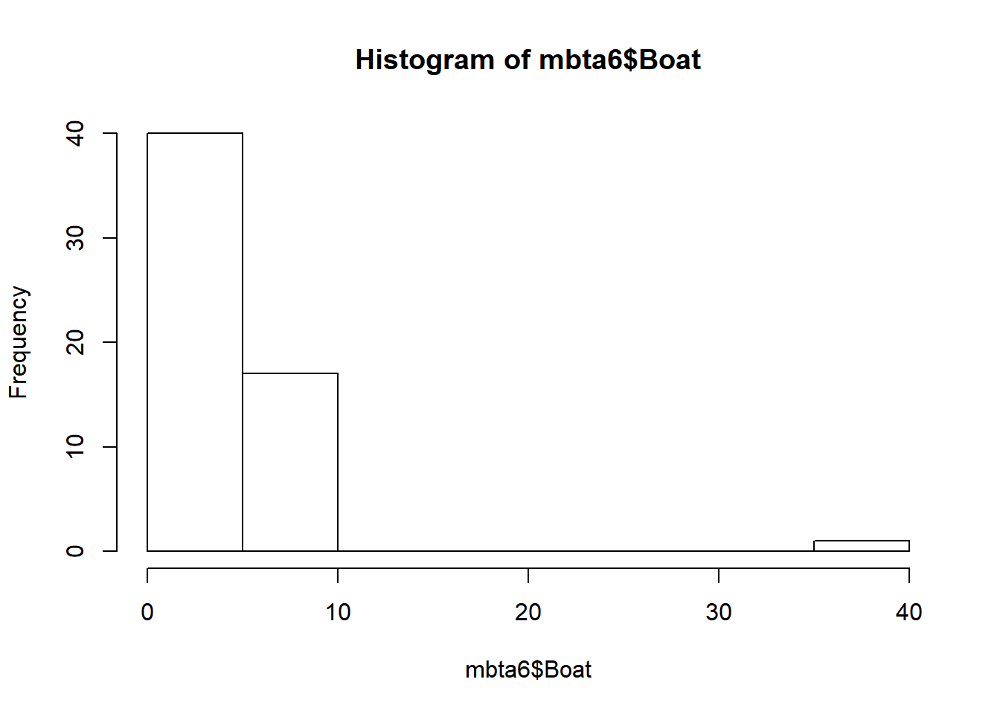
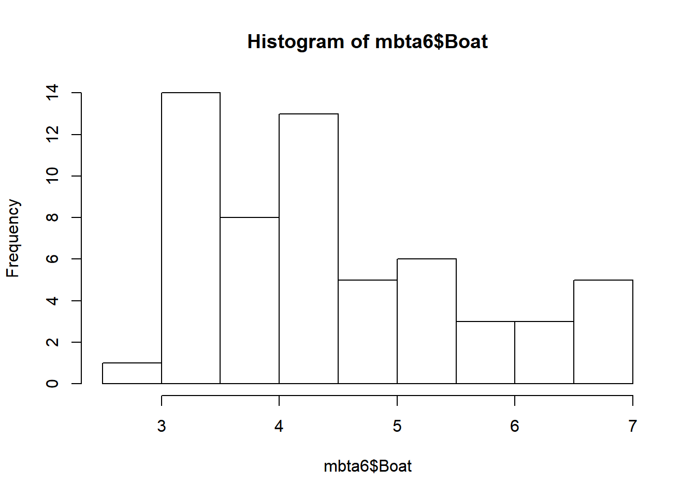
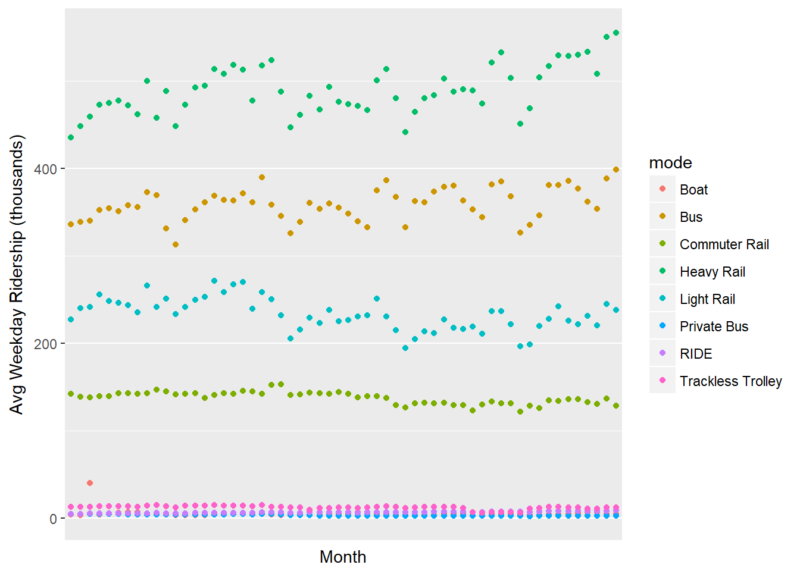
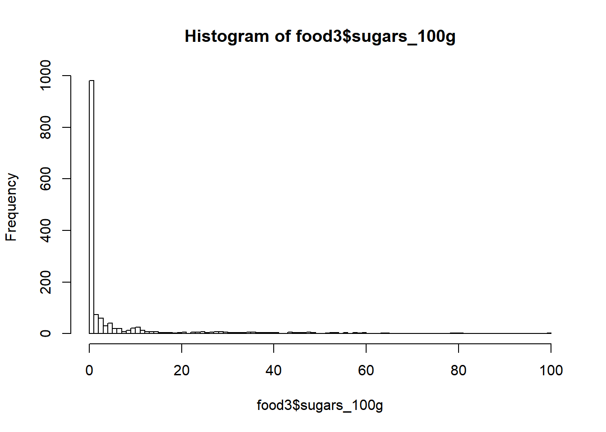
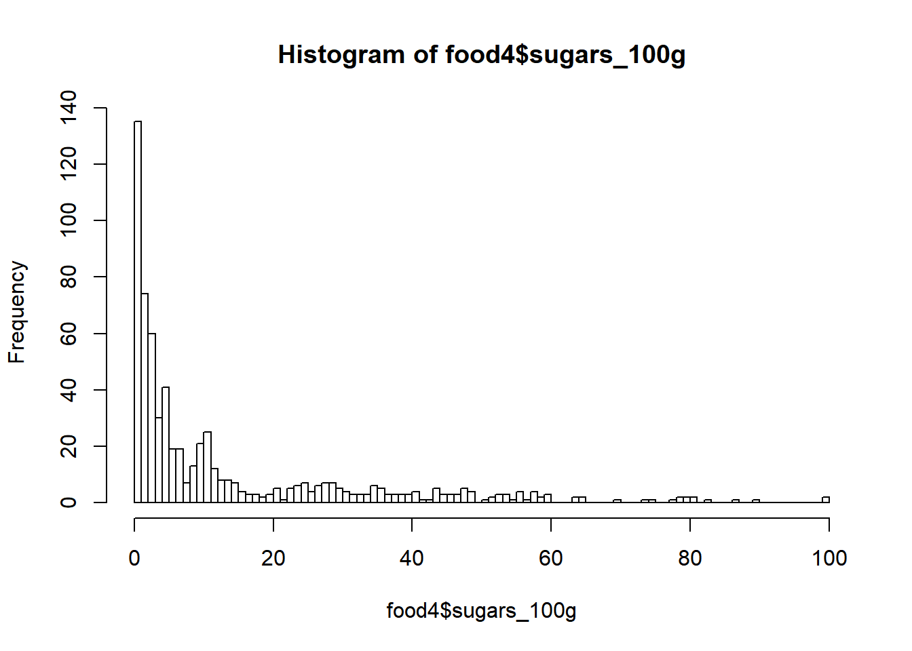

5 Importing & Cleaning Data in R: Case Studies
Notes taken during/inspired by the Datacamp course ‘Importing & Cleaning Data in R: Case Studies’ by Nick Carchedi.
5.1 Ticket Sales Data
# Import sales.csv: sales
sales <- read.csv("https://assets.datacamp.com/production/course_1294/datasets/sales.csv", stringsAsFactors = FALSE)
# View dimensions of sales
dim(sales)## [1] 5000 46# Inspect first 6 rows of sales
head(sales, n = 6)## X event_id primary_act_id secondary_act_id
## 1 1 abcaf1adb99a935fc661 43f0436b905bfa7c2eec b85143bf51323b72e53c
## 2 2 6c56d7f08c95f2aa453c 1a3e9aecd0617706a794 f53529c5679ea6ca5a48
## 3 3 c7ab4524a121f9d687d2 4b677c3f5bec71eec8d1 b85143bf51323b72e53c
## 4 4 394cb493f893be9b9ed1 b1ccea01ad6ef8522796 b85143bf51323b72e53c
## 5 5 55b5f67e618557929f48 91c03a34b562436efa3c b85143bf51323b72e53c
## 6 6 4f10fd8b9f550352bd56 ac4b847b3fde66f2117e 63814f3d63317f1b56c4
## purch_party_lkup_id
## 1 7dfa56dd7d5956b17587
## 2 4f9e6fc637eaf7b736c2
## 3 6c2545703bd527a7144d
## 4 527d6b1eaffc69ddd882
## 5 8bd62c394a35213bdf52
## 6 3b3a628f83135acd0676
## event_name
## 1 Xfinity Center Mansfield Premier Parking: Florida Georgia Line
## 2 Gorge Camping - dave matthews band - sept 3-7
## 3 Dodge Theatre Adams Street Parking - benise
## 4 Gexa Energy Pavilion Vip Parking : kid rock with sheryl crow
## 5 Premier Parking - motley crue
## 6 Fast Lane Access: Journey
## primary_act_name secondary_act_name
## 1 XFINITY Center Mansfield Premier Parking NULL
## 2 Gorge Camping Dave Matthews Band
## 3 Parking Event NULL
## 4 Gexa Energy Pavilion VIP Parking NULL
## 5 White River Amphitheatre Premier Parking NULL
## 6 Fast Lane Access Journey
## major_cat_name minor_cat_name la_event_type_cat
## 1 MISC PARKING PARKING
## 2 MISC CAMPING INVALID
## 3 MISC PARKING PARKING
## 4 MISC PARKING PARKING
## 5 MISC PARKING PARKING
## 6 MISC SPECIAL ENTRY (UPSELL) UPSELL
## event_disp_name
## 1 Xfinity Center Mansfield Premier Parking: Florida Georgia Line
## 2 Gorge Camping - dave matthews band - sept 3-7
## 3 Dodge Theatre Adams Street Parking - benise
## 4 Gexa Energy Pavilion Vip Parking : kid rock with sheryl crow
## 5 Premier Parking - motley crue
## 6 Fast Lane Access: Journey
## ticket_text
## 1 THIS TICKET IS VALID FOR PARKING ONLY GOOD THIS DAY ONLY PREMIER PARKING PASS XFINITY CENTER,LOTS 4 PM SAT SEP 12 2015 7:30 PM
## 2 %OVERNIGHT C A M P I N G%* * * * * *%GORGE CAMPGROUND%* GOOD THIS DATE ONLY *%SEP 3 - 6, 2009
## 3 ADAMS STREET GARAGE%PARKING FOR 4/21/06 ONLY%DODGE THEATRE PARKING PASS%ENTRANCE ON ADAMS STREET%BENISE%GARAGE OPENS AT 6:00PM
## 4 THIS TICKET IS VALID FOR PARKING ONLY GOOD FOR THIS DATE ONLY VIP PARKING PASS GEXA ENERGY PAVILION FRI SEP 02 2011 7:00 PM
## 5 THIS TICKET IS VALID%FOR PARKING ONLY%GOOD THIS DATE ONLY%PREMIER PARKING PASS%WHITE RIVER AMPHITHEATRE%SAT JUL 30, 2005 6:00PM
## 6 FAST LANE JOURNEY FAST LANE EVENT THIS IS NOT A TICKET SAN MANUEL AMPHITHEATER SAT JUL 21 2012 7:00 PM
## tickets_purchased_qty trans_face_val_amt delivery_type_cd
## 1 1 45 eTicket
## 2 1 75 TicketFast
## 3 1 5 TicketFast
## 4 1 20 Mail
## 5 1 20 Mail
## 6 2 10 TicketFast
## event_date_time event_dt presale_dt onsale_dt
## 1 2015-09-12 23:30:00 2015-09-12 NULL 2015-05-15
## 2 2009-09-05 01:00:00 2009-09-04 NULL 2009-03-13
## 3 2006-04-22 01:30:00 2006-04-21 NULL 2006-02-25
## 4 2011-09-03 00:00:00 2011-09-02 NULL 2011-04-22
## 5 2005-07-31 01:00:00 2005-07-30 2005-03-02 2005-03-04
## 6 2012-07-22 02:00:00 2012-07-21 NULL 2012-04-11
## sales_ord_create_dttm sales_ord_tran_dt print_dt timezn_nm
## 1 2015-09-11 18:17:45 2015-09-11 2015-09-12 EST
## 2 2009-07-06 00:00:00 2009-07-05 2009-09-01 PST
## 3 2006-04-05 00:00:00 2006-04-05 2006-04-05 MST
## 4 2011-07-01 17:38:50 2011-07-01 2011-07-06 CST
## 5 2005-06-18 00:00:00 2005-06-18 2005-06-28 PST
## 6 2012-07-21 17:20:18 2012-07-21 2012-07-21 PST
## venue_city venue_state venue_postal_cd_sgmt_1
## 1 MANSFIELD MASSACHUSETTS 02048
## 2 QUINCY WASHINGTON 98848
## 3 PHOENIX ARIZONA 85003
## 4 DALLAS TEXAS 75210
## 5 AUBURN WASHINGTON 98092
## 6 SAN BERNARDINO CALIFORNIA 92407
## sales_platform_cd print_flg la_valid_tkt_event_flg fin_mkt_nm
## 1 www.concerts.livenation.com T N Boston
## 2 NULL T N Seattle
## 3 NULL T N Arizona
## 4 NULL T N Dallas
## 5 NULL T N Seattle
## 6 www.livenation.com T N Los Angeles
## web_session_cookie_val gndr_cd age_yr income_amt edu_val
## 1 7dfa56dd7d5956b17587 <NA> <NA> <NA> <NA>
## 2 4f9e6fc637eaf7b736c2 <NA> <NA> <NA> <NA>
## 3 6c2545703bd527a7144d <NA> <NA> <NA> <NA>
## 4 527d6b1eaffc69ddd882 <NA> <NA> <NA> <NA>
## 5 8bd62c394a35213bdf52 <NA> <NA> <NA> <NA>
## 6 3b3a628f83135acd0676 <NA> <NA> <NA> <NA>
## edu_1st_indv_val edu_2nd_indv_val adults_in_hh_num married_ind
## 1 <NA> <NA> <NA> <NA>
## 2 <NA> <NA> <NA> <NA>
## 3 <NA> <NA> <NA> <NA>
## 4 <NA> <NA> <NA> <NA>
## 5 <NA> <NA> <NA> <NA>
## 6 <NA> <NA> <NA> <NA>
## child_present_ind home_owner_ind occpn_val occpn_1st_val occpn_2nd_val
## 1 <NA> <NA> <NA> <NA> <NA>
## 2 <NA> <NA> <NA> <NA> <NA>
## 3 <NA> <NA> <NA> <NA> <NA>
## 4 <NA> <NA> <NA> <NA> <NA>
## 5 <NA> <NA> <NA> <NA> <NA>
## 6 <NA> <NA> <NA> <NA> <NA>
## dist_to_ven
## 1 NA
## 2 59
## 3 NA
## 4 NA
## 5 NA
## 6 NA# View column names of sales
names(sales)## [1] "X" "event_id"
## [3] "primary_act_id" "secondary_act_id"
## [5] "purch_party_lkup_id" "event_name"
## [7] "primary_act_name" "secondary_act_name"
## [9] "major_cat_name" "minor_cat_name"
## [11] "la_event_type_cat" "event_disp_name"
## [13] "ticket_text" "tickets_purchased_qty"
## [15] "trans_face_val_amt" "delivery_type_cd"
## [17] "event_date_time" "event_dt"
## [19] "presale_dt" "onsale_dt"
## [21] "sales_ord_create_dttm" "sales_ord_tran_dt"
## [23] "print_dt" "timezn_nm"
## [25] "venue_city" "venue_state"
## [27] "venue_postal_cd_sgmt_1" "sales_platform_cd"
## [29] "print_flg" "la_valid_tkt_event_flg"
## [31] "fin_mkt_nm" "web_session_cookie_val"
## [33] "gndr_cd" "age_yr"
## [35] "income_amt" "edu_val"
## [37] "edu_1st_indv_val" "edu_2nd_indv_val"
## [39] "adults_in_hh_num" "married_ind"
## [41] "child_present_ind" "home_owner_ind"
## [43] "occpn_val" "occpn_1st_val"
## [45] "occpn_2nd_val" "dist_to_ven"Luckily, the rows and columns appear to be arranged in a meaningful way: each row represents an observation and each column a variable, or piece of information about that observation.
In R, there are a great many tools at your disposal to help get a feel for your data. Besides the three you used in the previous exercise, the functions str() and summary() can be very helpful.
The dplyr package, introduced in Cleaning Data in R, offers the glimpse() function, which can also be used for this purpose. The package is already installed on DataCamp; you just need to load it.
# Look at structure of sales
str(sales)## 'data.frame': 5000 obs. of 46 variables:
## $ X : int 1 2 3 4 5 6 7 8 9 10 ...
## $ event_id : chr "abcaf1adb99a935fc661" "6c56d7f08c95f2aa453c" "c7ab4524a121f9d687d2" "394cb493f893be9b9ed1" ...
## $ primary_act_id : chr "43f0436b905bfa7c2eec" "1a3e9aecd0617706a794" "4b677c3f5bec71eec8d1" "b1ccea01ad6ef8522796" ...
## $ secondary_act_id : chr "b85143bf51323b72e53c" "f53529c5679ea6ca5a48" "b85143bf51323b72e53c" "b85143bf51323b72e53c" ...
## $ purch_party_lkup_id : chr "7dfa56dd7d5956b17587" "4f9e6fc637eaf7b736c2" "6c2545703bd527a7144d" "527d6b1eaffc69ddd882" ...
## $ event_name : chr "Xfinity Center Mansfield Premier Parking: Florida Georgia Line" "Gorge Camping - dave matthews band - sept 3-7" "Dodge Theatre Adams Street Parking - benise" "Gexa Energy Pavilion Vip Parking : kid rock with sheryl crow" ...
## $ primary_act_name : chr "XFINITY Center Mansfield Premier Parking" "Gorge Camping" "Parking Event" "Gexa Energy Pavilion VIP Parking" ...
## $ secondary_act_name : chr "NULL" "Dave Matthews Band" "NULL" "NULL" ...
## $ major_cat_name : chr "MISC" "MISC" "MISC" "MISC" ...
## $ minor_cat_name : chr "PARKING" "CAMPING" "PARKING" "PARKING" ...
## $ la_event_type_cat : chr "PARKING" "INVALID" "PARKING" "PARKING" ...
## $ event_disp_name : chr "Xfinity Center Mansfield Premier Parking: Florida Georgia Line" "Gorge Camping - dave matthews band - sept 3-7" "Dodge Theatre Adams Street Parking - benise" "Gexa Energy Pavilion Vip Parking : kid rock with sheryl crow" ...
## $ ticket_text : chr " THIS TICKET IS VALID FOR PARKING ONLY GOOD THIS DAY ONLY PREMIER PARKING PASS XFINIT"| __truncated__ "%OVERNIGHT C A M P I N G%* * * * * *%GORGE CAMPGROUND%* GOOD THIS DATE ONLY *%SEP 3 - 6, 2009" "ADAMS STREET GARAGE%PARKING FOR 4/21/06 ONLY%DODGE THEATRE PARKING PASS%ENTRANCE ON ADAMS STREET%BENISE%GARAGE OPENS AT 6:00PM" " THIS TICKET IS VALID FOR PARKING ONLY GOOD FOR THIS DATE ONLY VIP PARKING PASS GEXA"| __truncated__ ...
## $ tickets_purchased_qty : int 1 1 1 1 1 2 1 1 1 1 ...
## $ trans_face_val_amt : num 45 75 5 20 20 10 30 28 20 25 ...
## $ delivery_type_cd : chr "eTicket" "TicketFast" "TicketFast" "Mail" ...
## $ event_date_time : chr "2015-09-12 23:30:00" "2009-09-05 01:00:00" "2006-04-22 01:30:00" "2011-09-03 00:00:00" ...
## $ event_dt : chr "2015-09-12" "2009-09-04" "2006-04-21" "2011-09-02" ...
## $ presale_dt : chr "NULL" "NULL" "NULL" "NULL" ...
## $ onsale_dt : chr "2015-05-15" "2009-03-13" "2006-02-25" "2011-04-22" ...
## $ sales_ord_create_dttm : chr "2015-09-11 18:17:45" "2009-07-06 00:00:00" "2006-04-05 00:00:00" "2011-07-01 17:38:50" ...
## $ sales_ord_tran_dt : chr "2015-09-11" "2009-07-05" "2006-04-05" "2011-07-01" ...
## $ print_dt : chr "2015-09-12" "2009-09-01" "2006-04-05" "2011-07-06" ...
## $ timezn_nm : chr "EST" "PST" "MST" "CST" ...
## $ venue_city : chr "MANSFIELD" "QUINCY" "PHOENIX" "DALLAS" ...
## $ venue_state : chr "MASSACHUSETTS" "WASHINGTON" "ARIZONA" "TEXAS" ...
## $ venue_postal_cd_sgmt_1: chr "02048" "98848" "85003" "75210" ...
## $ sales_platform_cd : chr "www.concerts.livenation.com" "NULL" "NULL" "NULL" ...
## $ print_flg : chr "T " "T " "T " "T " ...
## $ la_valid_tkt_event_flg: chr "N " "N " "N " "N " ...
## $ fin_mkt_nm : chr "Boston" "Seattle" "Arizona" "Dallas" ...
## $ web_session_cookie_val: chr "7dfa56dd7d5956b17587" "4f9e6fc637eaf7b736c2" "6c2545703bd527a7144d" "527d6b1eaffc69ddd882" ...
## $ gndr_cd : chr NA NA NA NA ...
## $ age_yr : chr NA NA NA NA ...
## $ income_amt : chr NA NA NA NA ...
## $ edu_val : chr NA NA NA NA ...
## $ edu_1st_indv_val : chr NA NA NA NA ...
## $ edu_2nd_indv_val : chr NA NA NA NA ...
## $ adults_in_hh_num : chr NA NA NA NA ...
## $ married_ind : chr NA NA NA NA ...
## $ child_present_ind : chr NA NA NA NA ...
## $ home_owner_ind : chr NA NA NA NA ...
## $ occpn_val : chr NA NA NA NA ...
## $ occpn_1st_val : chr NA NA NA NA ...
## $ occpn_2nd_val : chr NA NA NA NA ...
## $ dist_to_ven : int NA 59 NA NA NA NA NA NA NA NA ...# View a summary of sales
summary(sales)## X event_id primary_act_id secondary_act_id
## Min. : 1 Length:5000 Length:5000 Length:5000
## 1st Qu.:1251 Class :character Class :character Class :character
## Median :2500 Mode :character Mode :character Mode :character
## Mean :2500
## 3rd Qu.:3750
## Max. :5000
##
## purch_party_lkup_id event_name primary_act_name
## Length:5000 Length:5000 Length:5000
## Class :character Class :character Class :character
## Mode :character Mode :character Mode :character
##
##
##
##
## secondary_act_name major_cat_name minor_cat_name
## Length:5000 Length:5000 Length:5000
## Class :character Class :character Class :character
## Mode :character Mode :character Mode :character
##
##
##
##
## la_event_type_cat event_disp_name ticket_text
## Length:5000 Length:5000 Length:5000
## Class :character Class :character Class :character
## Mode :character Mode :character Mode :character
##
##
##
##
## tickets_purchased_qty trans_face_val_amt delivery_type_cd
## Min. :1.000 Min. : 1.00 Length:5000
## 1st Qu.:1.000 1st Qu.: 20.00 Class :character
## Median :1.000 Median : 30.00 Mode :character
## Mean :1.639 Mean : 77.08
## 3rd Qu.:2.000 3rd Qu.: 85.00
## Max. :8.000 Max. :1520.88
##
## event_date_time event_dt presale_dt
## Length:5000 Length:5000 Length:5000
## Class :character Class :character Class :character
## Mode :character Mode :character Mode :character
##
##
##
##
## onsale_dt sales_ord_create_dttm sales_ord_tran_dt
## Length:5000 Length:5000 Length:5000
## Class :character Class :character Class :character
## Mode :character Mode :character Mode :character
##
##
##
##
## print_dt timezn_nm venue_city
## Length:5000 Length:5000 Length:5000
## Class :character Class :character Class :character
## Mode :character Mode :character Mode :character
##
##
##
##
## venue_state venue_postal_cd_sgmt_1 sales_platform_cd
## Length:5000 Length:5000 Length:5000
## Class :character Class :character Class :character
## Mode :character Mode :character Mode :character
##
##
##
##
## print_flg la_valid_tkt_event_flg fin_mkt_nm
## Length:5000 Length:5000 Length:5000
## Class :character Class :character Class :character
## Mode :character Mode :character Mode :character
##
##
##
##
## web_session_cookie_val gndr_cd age_yr
## Length:5000 Length:5000 Length:5000
## Class :character Class :character Class :character
## Mode :character Mode :character Mode :character
##
##
##
##
## income_amt edu_val edu_1st_indv_val
## Length:5000 Length:5000 Length:5000
## Class :character Class :character Class :character
## Mode :character Mode :character Mode :character
##
##
##
##
## edu_2nd_indv_val adults_in_hh_num married_ind
## Length:5000 Length:5000 Length:5000
## Class :character Class :character Class :character
## Mode :character Mode :character Mode :character
##
##
##
##
## child_present_ind home_owner_ind occpn_val
## Length:5000 Length:5000 Length:5000
## Class :character Class :character Class :character
## Mode :character Mode :character Mode :character
##
##
##
##
## occpn_1st_val occpn_2nd_val dist_to_ven
## Length:5000 Length:5000 Min. : 0.0
## Class :character Class :character 1st Qu.: 12.0
## Mode :character Mode :character Median : 26.0
## Mean : 158.2
## 3rd Qu.: 77.5
## Max. :2548.0
## NA's :4677# Load dplyr
library(dplyr)##
## Attaching package: 'dplyr'## The following objects are masked from 'package:stats':
##
## filter, lag## The following objects are masked from 'package:base':
##
## intersect, setdiff, setequal, union# Get a glimpse of sales
glimpse(sales)## Observations: 5,000
## Variables: 46
## $ X <int> 1, 2, 3, 4, 5, 6, 7, 8, 9, 10, 11, 12, ...
## $ event_id <chr> "abcaf1adb99a935fc661", "6c56d7f08c95f2...
## $ primary_act_id <chr> "43f0436b905bfa7c2eec", "1a3e9aecd06177...
## $ secondary_act_id <chr> "b85143bf51323b72e53c", "f53529c5679ea6...
## $ purch_party_lkup_id <chr> "7dfa56dd7d5956b17587", "4f9e6fc637eaf7...
## $ event_name <chr> "Xfinity Center Mansfield Premier Parki...
## $ primary_act_name <chr> "XFINITY Center Mansfield Premier Parki...
## $ secondary_act_name <chr> "NULL", "Dave Matthews Band", "NULL", "...
## $ major_cat_name <chr> "MISC", "MISC", "MISC", "MISC", "MISC",...
## $ minor_cat_name <chr> "PARKING", "CAMPING", "PARKING", "PARKI...
## $ la_event_type_cat <chr> "PARKING", "INVALID", "PARKING", "PARKI...
## $ event_disp_name <chr> "Xfinity Center Mansfield Premier Parki...
## $ ticket_text <chr> " THIS TICKET IS VALID FOR PAR...
## $ tickets_purchased_qty <int> 1, 1, 1, 1, 1, 2, 1, 1, 1, 1, 1, 2, 4, ...
## $ trans_face_val_amt <dbl> 45, 75, 5, 20, 20, 10, 30, 28, 20, 25, ...
## $ delivery_type_cd <chr> "eTicket", "TicketFast", "TicketFast", ...
## $ event_date_time <chr> "2015-09-12 23:30:00", "2009-09-05 01:0...
## $ event_dt <chr> "2015-09-12", "2009-09-04", "2006-04-21...
## $ presale_dt <chr> "NULL", "NULL", "NULL", "NULL", "2005-0...
## $ onsale_dt <chr> "2015-05-15", "2009-03-13", "2006-02-25...
## $ sales_ord_create_dttm <chr> "2015-09-11 18:17:45", "2009-07-06 00:0...
## $ sales_ord_tran_dt <chr> "2015-09-11", "2009-07-05", "2006-04-05...
## $ print_dt <chr> "2015-09-12", "2009-09-01", "2006-04-05...
## $ timezn_nm <chr> "EST", "PST", "MST", "CST", "PST", "PST...
## $ venue_city <chr> "MANSFIELD", "QUINCY", "PHOENIX", "DALL...
## $ venue_state <chr> "MASSACHUSETTS", "WASHINGTON", "ARIZONA...
## $ venue_postal_cd_sgmt_1 <chr> "02048", "98848", "85003", "75210", "98...
## $ sales_platform_cd <chr> "www.concerts.livenation.com", "NULL", ...
## $ print_flg <chr> "T ", "T ", "T ", "T ", "T ", "T ", "T ...
## $ la_valid_tkt_event_flg <chr> "N ", "N ", "N ", "N ", "N ", "N ", "N ...
## $ fin_mkt_nm <chr> "Boston", "Seattle", "Arizona", "Dallas...
## $ web_session_cookie_val <chr> "7dfa56dd7d5956b17587", "4f9e6fc637eaf7...
## $ gndr_cd <chr> NA, NA, NA, NA, NA, NA, "M", NA, NA, NA...
## $ age_yr <chr> NA, NA, NA, NA, NA, NA, "28", NA, NA, N...
## $ income_amt <chr> NA, NA, NA, NA, NA, NA, "112500", NA, N...
## $ edu_val <chr> NA, NA, NA, NA, NA, NA, "High School", ...
## $ edu_1st_indv_val <chr> NA, NA, NA, NA, NA, NA, "High School", ...
## $ edu_2nd_indv_val <chr> NA, NA, NA, NA, NA, NA, "NULL", NA, NA,...
## $ adults_in_hh_num <chr> NA, NA, NA, NA, NA, NA, "4", NA, NA, NA...
## $ married_ind <chr> NA, NA, NA, NA, NA, NA, "0", NA, NA, NA...
## $ child_present_ind <chr> NA, NA, NA, NA, NA, NA, "1", NA, NA, NA...
## $ home_owner_ind <chr> NA, NA, NA, NA, NA, NA, "0", NA, NA, NA...
## $ occpn_val <chr> NA, NA, NA, NA, NA, NA, "NULL", NA, NA,...
## $ occpn_1st_val <chr> NA, NA, NA, NA, NA, NA, "Craftsman Blue...
## $ occpn_2nd_val <chr> NA, NA, NA, NA, NA, NA, "NULL", NA, NA,...
## $ dist_to_ven <int> NA, 59, NA, NA, NA, NA, NA, NA, NA, NA,...5.1.1 Removing redundant info
The first column of data is just a duplication of the row numbers. Not very useful. Go ahead and delete that column.
Remember that nrow() and ncol() return the number of rows and columns in a data frame, respectively.
Also, recall that you can use square brackets to subset a data frame as follows:
my_df[1:5, ] # First 5 rows of my_df
my_df[, 4] # Fourth column of my_df
Alternatively, you can remove rows and columns using negative indices. For example:
my_df[-(1:5), ] # Omit first 5 rows of my_df
my_df[, -4] # Omit fourth column of my_df
# Remove the first column of sales: sales2
sales2 <- sales[, -1]Many of the columns have information that’s of no use to us. For example, the first four columns contain internal codes representing particular events. The last fifteen columns also aren’t worth keeping; there are too many missing values to make them worthwhile.
An easy way to get rid of unnecessary columns is to create a vector containing the column indices you want to keep, then subset the data based on that vector using single bracket subsetting.
# Define a vector of column indices: keep
keep <- c(5:30)
# Subset sales2 using keep: sales3
sales3 <- sales2[keep]Some of the columns in your data frame include multiple pieces of information that should be in separate columns. In this exercise, you will separate such a column into two: one for date and one for time. You will use the separate() function from the tidyr package (already installed for you).
For isntance the event_date_time column has a date and time separated by a space. Therefore, you’ll use sep = " " as an argument to separate().
head(sales3$event_date_time)## [1] "2015-09-12 23:30:00" "2009-09-05 01:00:00" "2006-04-22 01:30:00"
## [4] "2011-09-03 00:00:00" "2005-07-31 01:00:00" "2012-07-22 02:00:00"head(sales3$sales_ord_create_dttm)## [1] "2015-09-11 18:17:45" "2009-07-06 00:00:00" "2006-04-05 00:00:00"
## [4] "2011-07-01 17:38:50" "2005-06-18 00:00:00" "2012-07-21 17:20:18"# Load tidyr
library(tidyr)
# Split event_date_time: sales4
sales4 <- separate(sales3, event_date_time,
into = c("event_dt", "event_time"), sep = " ")Looks like that second call to separate() threw a warning. Not to worry; warnings aren’t as bad as error messages. It’s not saying that the command didn’t execute; it’s just a heads-up that something unusual happened.
The warning says Too few values at 4 locations. You may be able to guess already what the issue is, but it’s still good to take a look.
sales3$sales_ord_create_dttm[c(2516, 3863, 4082, 4183)]## [1] "NULL" "NULL" "NULL" "NULL"# Define an issues vector
issues <- c(2516, 3863, 4082, 4183)
# Print values of sales_ord_create_dttm at these indices
sales3$sales_ord_create_dttm[issues]## [1] "NULL" "NULL" "NULL" "NULL"# Print a well-behaved value of sales_ord_create_dttm
sales3$sales_ord_create_dttm[2517]## [1] "2013-08-04 23:07:19"5.2 Working with dates
Some of the columns in your dataset contain dates of different events. Right now, they are stored as character strings. That’s fine if all you want to do is look up the date associated with an event, but if you want to do any comparisons or math with the dates, it’s MUCH easier to store them as Date objects.
Luckily, all of the date columns in this dataset have the substring “dt” in their name, so you can use the str_detect() function of the stringr package to find the date columns. Then you can coerce them to Date objects using a function from the lubridate package.
You’ll use lapply() to apply the appropriate lubridate function to all of the columns that contain dates. Recall the following syntax for lapply() applied to some data frame columns of interest:
lapply(my_data_frame[, cols], function_name)
Also recall that function names in lubridate combine the letters y, m, d, h, m, and s depending on the format of the date/time string being read in.
# Load stringr
library(stringr)
# Find columns of sales5 containing "dt": date_cols
date_cols <- str_detect(names(sales4),"dt")
# Load lubridate
library(lubridate)## Loading required package: methods##
## Attaching package: 'lubridate'## The following object is masked from 'package:base':
##
## date# Coerce date columns into Date objects
sales4[, date_cols] <- lapply(sales4[, date_cols], ymd)## Warning: 2892 failed to parse.## Warning: 101 failed to parse.## Warning: All formats failed to parse. No formats found.## Warning: 424 failed to parse.Some of the calls to ymd() caused a failure to parse warning. That’s probably because of more missing data, but again, it’s good to check to be sure.
## stringr is loaded
# Find date columns (don't change)
date_cols <- str_detect(names(sales4), "dt")
# Create logical vectors indicating missing values (don't change)
missing <- lapply(sales4[, date_cols], is.na)
# Create a numerical vector that counts missing values: num_missing
num_missing <- sapply(missing, sum)
# Print num_missing
num_missing## event_dt event_dt.1 presale_dt
## 0 0 2892
## onsale_dt sales_ord_create_dttm sales_ord_tran_dt
## 101 5000 0
## print_dt
## 424The number of NAs in each column match the numbers from the warning messages, so missing data is the culprit. How to proceed depends on your desired analysis. If you really need complete sets of date/time information, you might delete the rows or columns containing NAs.
5.3 MBTA Ridership Data
The Massachusetts Bay Transportation Authority (“MBTA” or just “the T” for short) manages America’s oldest subway, as well as Greater Boston’s commuter rail, ferry, and bus systems.
It’s your first day on the job as the T’s data analyst and you’ve been tasked with analyzing average ridership through time. You’re in luck, because this chapter of the course will guide you through cleaning a set of MBTA ridership data!
The dataset is stored as an Excel spreadsheet called mbta.xlsx. You’ll use the read_excel() function from Hadley Wickham’s readxl package to import it.
The first time you import a dataset, you might not know how many rows need to be skipped. In this case, the first row is a title (see this Excel screenshot), so you’ll need to skip the first row.
# Load readxl
library(readxl)
# Import mbta.xlsx and skip first row: mbta
mbta <- read_excel("C:/Users/DEsktop/Nextcloud/Documents/2017/RData/mbta.xlsx", skip = 1)
# View the structure of mbta
str(mbta)## Classes 'tbl_df', 'tbl' and 'data.frame': 11 obs. of 60 variables:
## $ X__1 : num 1 2 3 4 5 6 7 8 9 10 ...
## $ mode : chr "All Modes by Qtr" "Boat" "Bus" "Commuter Rail" ...
## $ 2007-01: chr "NA" "4" "335.819" "142.2" ...
## $ 2007-02: chr "NA" "3.6" "338.675" "138.5" ...
## $ 2007-03: num 1188 40 340 138 459 ...
## $ 2007-04: chr "NA" "4.3" "352.162" "139.5" ...
## $ 2007-05: chr "NA" "4.9" "354.367" "139" ...
## $ 2007-06: num 1246 5.8 350.5 143 477 ...
## $ 2007-07: chr "NA" "6.521" "357.519" "142.391" ...
## $ 2007-08: chr "NA" "6.572" "355.479" "142.364" ...
## $ 2007-09: num 1256.57 5.47 372.6 143.05 499.57 ...
## $ 2007-10: chr "NA" "5.145" "368.847" "146.542" ...
## $ 2007-11: chr "NA" "3.763" "330.826" "145.089" ...
## $ 2007-12: num 1216.89 2.98 312.92 141.59 448.27 ...
## $ 2008-01: chr "NA" "3.175" "340.324" "142.145" ...
## $ 2008-02: chr "NA" "3.111" "352.905" "142.607" ...
## $ 2008-03: num 1253.52 3.51 361.15 137.45 494.05 ...
## $ 2008-04: chr "NA" "4.164" "368.189" "140.389" ...
## $ 2008-05: chr "NA" "4.015" "363.903" "142.585" ...
## $ 2008-06: num 1314.82 5.19 362.96 142.06 518.35 ...
## $ 2008-07: chr "NA" "6.016" "370.921" "145.731" ...
## $ 2008-08: chr "NA" "5.8" "361.057" "144.565" ...
## $ 2008-09: num 1307.04 4.59 389.54 141.91 517.32 ...
## $ 2008-10: chr "NA" "4.285" "357.974" "151.957" ...
## $ 2008-11: chr "NA" "3.488" "345.423" "152.952" ...
## $ 2008-12: num 1232.65 3.01 325.77 140.81 446.74 ...
## $ 2009-01: chr "NA" "3.014" "338.532" "141.448" ...
## $ 2009-02: chr "NA" "3.196" "360.412" "143.529" ...
## $ 2009-03: num 1209.79 3.33 353.69 142.89 467.22 ...
## $ 2009-04: chr "NA" "4.049" "359.38" "142.34" ...
## $ 2009-05: chr "NA" "4.119" "354.75" "144.225" ...
## $ 2009-06: num 1233.1 4.9 347.9 142 473.1 ...
## $ 2009-07: chr "NA" "6.444" "339.477" "137.691" ...
## $ 2009-08: chr "NA" "5.903" "332.661" "139.158" ...
## $ 2009-09: num 1230.5 4.7 374.3 139.1 500.4 ...
## $ 2009-10: chr "NA" "4.212" "385.868" "137.104" ...
## $ 2009-11: chr "NA" "3.576" "366.98" "129.343" ...
## $ 2009-12: num 1207.85 3.11 332.39 126.07 440.93 ...
## $ 2010-01: chr "NA" "3.207" "362.226" "130.91" ...
## $ 2010-02: chr "NA" "3.195" "361.138" "131.918" ...
## $ 2010-03: num 1208.86 3.48 373.44 131.25 483.4 ...
## $ 2010-04: chr "NA" "4.452" "378.611" "131.722" ...
## $ 2010-05: chr "NA" "4.415" "380.171" "128.8" ...
## $ 2010-06: num 1244.41 5.41 363.27 129.14 490.26 ...
## $ 2010-07: chr "NA" "6.513" "353.04" "122.935" ...
## $ 2010-08: chr "NA" "6.269" "343.688" "129.732" ...
## $ 2010-09: num 1225.5 4.7 381.6 132.9 521.1 ...
## $ 2010-10: chr "NA" "4.402" "384.987" "131.033" ...
## $ 2010-11: chr "NA" "3.731" "367.955" "130.889" ...
## $ 2010-12: num 1216.26 3.16 326.34 121.42 450.43 ...
## $ 2011-01: chr "NA" "3.14" "334.958" "128.396" ...
## $ 2011-02: chr "NA" "3.284" "346.234" "125.463" ...
## $ 2011-03: num 1223.45 3.67 380.4 134.37 516.73 ...
## $ 2011-04: chr "NA" "4.251" "380.446" "134.169" ...
## $ 2011-05: chr "NA" "4.431" "385.289" "136.14" ...
## $ 2011-06: num 1302.41 5.47 376.32 135.58 529.53 ...
## $ 2011-07: chr "NA" "6.581" "361.585" "132.41" ...
## $ 2011-08: chr "NA" "6.733" "353.793" "130.616" ...
## $ 2011-09: num 1291 5 388 137 550 ...
## $ 2011-10: chr "NA" "4.484" "398.456" "128.72" ...# View the first 6 rows of mbta
head(mbta, n = 6)## # A tibble: 6 x 60
## X__1 mode `2007-01` `2007-02` `2007-03` `2007-04` `2007-05`
## <dbl> <chr> <chr> <chr> <dbl> <chr> <chr>
## 1 1 All Modes by Qtr NA NA 1187.653 NA NA
## 2 2 Boat 4 3.6 40.000 4.3 4.9
## 3 3 Bus 335.819 338.675 339.867 352.162 354.367
## 4 4 Commuter Rail 142.2 138.5 137.700 139.5 139
## 5 5 Heavy Rail 435.294 448.271 458.583 472.201 474.579
## 6 6 Light Rail 227.231 240.262 241.444 255.557 248.262
## # ... with 53 more variables: `2007-06` <dbl>, `2007-07` <chr>,
## # `2007-08` <chr>, `2007-09` <dbl>, `2007-10` <chr>, `2007-11` <chr>,
## # `2007-12` <dbl>, `2008-01` <chr>, `2008-02` <chr>, `2008-03` <dbl>,
## # `2008-04` <chr>, `2008-05` <chr>, `2008-06` <dbl>, `2008-07` <chr>,
## # `2008-08` <chr>, `2008-09` <dbl>, `2008-10` <chr>, `2008-11` <chr>,
## # `2008-12` <dbl>, `2009-01` <chr>, `2009-02` <chr>, `2009-03` <dbl>,
## # `2009-04` <chr>, `2009-05` <chr>, `2009-06` <dbl>, `2009-07` <chr>,
## # `2009-08` <chr>, `2009-09` <dbl>, `2009-10` <chr>, `2009-11` <chr>,
## # `2009-12` <dbl>, `2010-01` <chr>, `2010-02` <chr>, `2010-03` <dbl>,
## # `2010-04` <chr>, `2010-05` <chr>, `2010-06` <dbl>, `2010-07` <chr>,
## # `2010-08` <chr>, `2010-09` <dbl>, `2010-10` <chr>, `2010-11` <chr>,
## # `2010-12` <dbl>, `2011-01` <chr>, `2011-02` <chr>, `2011-03` <dbl>,
## # `2011-04` <chr>, `2011-05` <chr>, `2011-06` <dbl>, `2011-07` <chr>,
## # `2011-08` <chr>, `2011-09` <dbl>, `2011-10` <chr># View a summary of mbta
summary(mbta)## X__1 mode 2007-01 2007-02
## Min. : 1.0 Length:11 Length:11 Length:11
## 1st Qu.: 3.5 Class :character Class :character Class :character
## Median : 6.0 Mode :character Mode :character Mode :character
## Mean : 6.0
## 3rd Qu.: 8.5
## Max. :11.0
## 2007-03 2007-04 2007-05
## Min. : 0.114 Length:11 Length:11
## 1st Qu.: 9.278 Class :character Class :character
## Median : 137.700 Mode :character Mode :character
## Mean : 330.293
## 3rd Qu.: 399.225
## Max. :1204.725
## 2007-06 2007-07 2007-08
## Min. : 0.096 Length:11 Length:11
## 1st Qu.: 5.700 Class :character Class :character
## Median : 143.000 Mode :character Mode :character
## Mean : 339.846
## 3rd Qu.: 413.788
## Max. :1246.129
## 2007-09 2007-10 2007-11
## Min. : -0.007 Length:11 Length:11
## 1st Qu.: 5.539 Class :character Class :character
## Median : 143.051 Mode :character Mode :character
## Mean : 352.554
## 3rd Qu.: 436.082
## Max. :1310.764
## 2007-12 2008-01 2008-02
## Min. : -0.060 Length:11 Length:11
## 1st Qu.: 4.385 Class :character Class :character
## Median : 141.585 Mode :character Mode :character
## Mean : 321.588
## 3rd Qu.: 380.594
## Max. :1216.890
## 2008-03 2008-04 2008-05
## Min. : 0.058 Length:11 Length:11
## 1st Qu.: 5.170 Class :character Class :character
## Median : 137.453 Mode :character Mode :character
## Mean : 345.604
## 3rd Qu.: 427.601
## Max. :1274.031
## 2008-06 2008-07 2008-08
## Min. : 0.060 Length:11 Length:11
## 1st Qu.: 5.742 Class :character Class :character
## Median : 142.057 Mode :character Mode :character
## Mean : 359.667
## 3rd Qu.: 440.656
## Max. :1320.728
## 2008-09 2008-10 2008-11
## Min. : 0.021 Length:11 Length:11
## 1st Qu.: 5.691 Class :character Class :character
## Median : 141.907 Mode :character Mode :character
## Mean : 362.099
## 3rd Qu.: 453.430
## Max. :1338.015
## 2008-12 2009-01 2009-02
## Min. : -0.015 Length:11 Length:11
## 1st Qu.: 4.689 Class :character Class :character
## Median : 140.810 Mode :character Mode :character
## Mean : 319.882
## 3rd Qu.: 386.255
## Max. :1232.655
## 2009-03 2009-04 2009-05
## Min. : -0.050 Length:11 Length:11
## 1st Qu.: 5.003 Class :character Class :character
## Median : 142.893 Mode :character Mode :character
## Mean : 330.142
## 3rd Qu.: 410.455
## Max. :1210.912
## 2009-06 2009-07 2009-08
## Min. : -0.079 Length:11 Length:11
## 1st Qu.: 5.845 Class :character Class :character
## Median : 142.006 Mode :character Mode :character
## Mean : 333.194
## 3rd Qu.: 410.482
## Max. :1233.085
## 2009-09 2009-10 2009-11
## Min. : -0.035 Length:11 Length:11
## 1st Qu.: 5.693 Class :character Class :character
## Median : 139.087 Mode :character Mode :character
## Mean : 346.687
## 3rd Qu.: 437.332
## Max. :1291.564
## 2009-12 2010-01 2010-02
## Min. : -0.022 Length:11 Length:11
## 1st Qu.: 4.784 Class :character Class :character
## Median : 126.066 Mode :character Mode :character
## Mean : 312.962
## 3rd Qu.: 386.659
## Max. :1207.845
## 2010-03 2010-04 2010-05
## Min. : 0.012 Length:11 Length:11
## 1st Qu.: 5.274 Class :character Class :character
## Median : 131.252 Mode :character Mode :character
## Mean : 332.726
## 3rd Qu.: 428.420
## Max. :1225.556
## 2010-06 2010-07 2010-08
## Min. : 0.008 Length:11 Length:11
## 1st Qu.: 6.436 Class :character Class :character
## Median : 129.144 Mode :character Mode :character
## Mean : 335.964
## 3rd Qu.: 426.769
## Max. :1244.409
## 2010-09 2010-10 2010-11
## Min. : 0.001 Length:11 Length:11
## 1st Qu.: 5.567 Class :character Class :character
## Median : 132.892 Mode :character Mode :character
## Mean : 346.524
## 3rd Qu.: 451.361
## Max. :1293.117
## 2010-12 2011-01 2011-02
## Min. : -0.004 Length:11 Length:11
## 1st Qu.: 4.466 Class :character Class :character
## Median : 121.422 Mode :character Mode :character
## Mean : 312.917
## 3rd Qu.: 388.385
## Max. :1216.262
## 2011-03 2011-04 2011-05
## Min. : 0.05 Length:11 Length:11
## 1st Qu.: 6.03 Class :character Class :character
## Median : 134.37 Mode :character Mode :character
## Mean : 345.17
## 3rd Qu.: 448.56
## Max. :1286.66
## 2011-06 2011-07 2011-08
## Min. : 0.054 Length:11 Length:11
## 1st Qu.: 6.926 Class :character Class :character
## Median : 135.581 Mode :character Mode :character
## Mean : 353.331
## 3rd Qu.: 452.923
## Max. :1302.414
## 2011-09 2011-10
## Min. : 0.043 Length:11
## 1st Qu.: 6.660 Class :character
## Median : 136.901 Mode :character
## Mean : 362.555
## 3rd Qu.: 469.204
## Max. :1348.754The data are organized with observations stored as columns rather than as rows.
First, though, you can address the missing data. All of the NA values are stored in the All Modes by Qtr row. This row really belongs in a different data frame; it is a quarterly average of weekday MBTA ridership. Since this dataset tracks monthly average ridership, you’ll remove that row.
Similarly, the 7th row (Pct Chg / Yr) and the 11th row (TOTAL) are not really observations as much as they are analysis. Go ahead and remove the 7th and 11th rows as well.
The first column also needs to be removed because it’s just listing the row numbers.
# Remove rows 1, 7, and 11 of mbta: mbta2
keep <- !(mbta$mode %in% c('All Modes by Qtr', 'Pct Chg / Yr', 'TOTAL'))
mbta2 <- mbta[keep,]
# Remove the first column of mbta2: mbta3
mbta3 <- mbta2[,-1]Our next problem is variables are stored in rows instead of columns. The different modes of transportation (commuter rail, bus, subway, ferry, …) are variables, providing information about each month’s average ridership. The months themselves are observations. You can tell which is which because as you go through time, the month changes, but the modes of transport offered by the T do not.
As is customary, you want to represent variables in columns rather than rows. The first step is to use the gather() function from the tidyr package, which will gather columns into key-value pairs.
# Load tidyr
library(tidyr)
# Gather columns of mbta3: mbta4
mbta4 <- gather(mbta3, month, thou_riders, -mode)
# View the head of mbta4
head(mbta4)## # A tibble: 6 x 3
## mode month thou_riders
## <chr> <chr> <chr>
## 1 Boat 2007-01 4
## 2 Bus 2007-01 335.819
## 3 Commuter Rail 2007-01 142.2
## 4 Heavy Rail 2007-01 435.294
## 5 Light Rail 2007-01 227.231
## 6 Private Bus 2007-01 4.772The thousand riders coloumn is still charecter data, so lets change that.
# Coerce thou_riders to numeric
mbta4$thou_riders <- as.numeric(mbta4$thou_riders)Now, you can finish the job you started earlier: getting variables into columns. Right now, variables are stored as “keys” in the mode column. You’ll use the tidyr function spread() to make them into columns containing average weekday ridership for the given month and mode of transport.
# Spread the contents of mbta4: mbta5
mbta5 <- spread(mbta4, mode, thou_riders)
# View the head of mbta5
head(mbta5)## # A tibble: 6 x 9
## month Boat Bus `Commuter Rail` `Heavy Rail` `Light Rail`
## <chr> <dbl> <dbl> <dbl> <dbl> <dbl>
## 1 2007-01 4.0 335.819 142.2 435.294 227.231
## 2 2007-02 3.6 338.675 138.5 448.271 240.262
## 3 2007-03 40.0 339.867 137.7 458.583 241.444
## 4 2007-04 4.3 352.162 139.5 472.201 255.557
## 5 2007-05 4.9 354.367 139.0 474.579 248.262
## 6 2007-06 5.8 350.543 143.0 477.032 246.108
## # ... with 3 more variables: `Private Bus` <dbl>, RIDE <dbl>, `Trackless
## # Trolley` <dbl>If we want to look at the data by year, we can seperate the month field out in to month and year.
# View the head of mbta5
head(mbta5)## # A tibble: 6 x 9
## month Boat Bus `Commuter Rail` `Heavy Rail` `Light Rail`
## <chr> <dbl> <dbl> <dbl> <dbl> <dbl>
## 1 2007-01 4.0 335.819 142.2 435.294 227.231
## 2 2007-02 3.6 338.675 138.5 448.271 240.262
## 3 2007-03 40.0 339.867 137.7 458.583 241.444
## 4 2007-04 4.3 352.162 139.5 472.201 255.557
## 5 2007-05 4.9 354.367 139.0 474.579 248.262
## 6 2007-06 5.8 350.543 143.0 477.032 246.108
## # ... with 3 more variables: `Private Bus` <dbl>, RIDE <dbl>, `Trackless
## # Trolley` <dbl># Split month column into month and year: mbta6
mbta6 <- separate(mbta5, month, into = c("month", "year"), sep ="-")
# View the head of mbta6
head(mbta6)## # A tibble: 6 x 10
## month year Boat Bus `Commuter Rail` `Heavy Rail` `Light Rail`
## <chr> <chr> <dbl> <dbl> <dbl> <dbl> <dbl>
## 1 2007 01 4.0 335.819 142.2 435.294 227.231
## 2 2007 02 3.6 338.675 138.5 448.271 240.262
## 3 2007 03 40.0 339.867 137.7 458.583 241.444
## 4 2007 04 4.3 352.162 139.5 472.201 255.557
## 5 2007 05 4.9 354.367 139.0 474.579 248.262
## 6 2007 06 5.8 350.543 143.0 477.032 246.108
## # ... with 3 more variables: `Private Bus` <dbl>, RIDE <dbl>, `Trackless
## # Trolley` <dbl>Looks like some of the data might be a bit out, which you can check using different functions, histogram being one such function.
# View a summary of mbta6
summary(mbta6)## month year Boat Bus
## Length:58 Length:58 Min. : 2.985 Min. :312.9
## Class :character Class :character 1st Qu.: 3.494 1st Qu.:345.6
## Mode :character Mode :character Median : 4.293 Median :359.9
## Mean : 5.068 Mean :358.6
## 3rd Qu.: 5.356 3rd Qu.:372.2
## Max. :40.000 Max. :398.5
## Commuter Rail Heavy Rail Light Rail Private Bus
## Min. :121.4 Min. :435.3 Min. :194.4 Min. :2.213
## 1st Qu.:131.4 1st Qu.:471.1 1st Qu.:220.6 1st Qu.:2.641
## Median :138.8 Median :487.3 Median :231.9 Median :2.820
## Mean :137.4 Mean :489.3 Mean :233.0 Mean :3.352
## 3rd Qu.:142.4 3rd Qu.:511.3 3rd Qu.:244.5 3rd Qu.:4.167
## Max. :153.0 Max. :554.9 Max. :271.1 Max. :4.878
## RIDE Trackless Trolley
## Min. :4.900 Min. : 5.777
## 1st Qu.:5.965 1st Qu.:11.679
## Median :6.615 Median :12.598
## Mean :6.604 Mean :12.125
## 3rd Qu.:7.149 3rd Qu.:13.320
## Max. :8.598 Max. :15.109# Generate a histogram of Boat ridership
hist(mbta6$Boat)
Looks like we may have an input or typo on the value close to 40 - perhaps should have been a 4.0 or just a 4. Because it’s an error, you don’t want this value influencing your analysis. In this exercise, you’ll locate the incorrect value and change it to 4.
# Find the row number of the incorrect value: i
i <- which(mbta6$Boat == 40)
# Replace the incorrect value with 4
mbta6$Boat[i] <- 4
# Generate a histogram of Boat column
hist(mbta6$Boat)
library(ggplot2)
# Look at all T ridership over time (example plot)
ggplot(mbta4, aes(x = month, y = thou_riders, col = mode)) + geom_point() +
scale_x_discrete(name = "Month", breaks = c(200701, 200801, 200901, 201001, 201101)) +
scale_y_continuous(name = "Avg Weekday Ridership (thousands)")
5.4 World Food Facts
library(data.table)##
## Attaching package: 'data.table'## The following objects are masked from 'package:lubridate':
##
## hour, isoweek, mday, minute, month, quarter, second, wday,
## week, yday, year## The following objects are masked from 'package:dplyr':
##
## between, first, last# Import sales.csv: food
food <- fread("https://assets.datacamp.com/production/course_1294/datasets/food.csv", stringsAsFactors = FALSE)
# Convert food to a data frame
food <- data.frame(food)
# View summary of food
summary(food)## V1 code url creator
## Min. : 1.0 Min. :100030 Length:1500 Length:1500
## 1st Qu.: 375.8 1st Qu.:124975 Class :character Class :character
## Median : 750.5 Median :149514 Mode :character Mode :character
## Mean : 750.5 Mean :149613
## 3rd Qu.:1125.2 3rd Qu.:174506
## Max. :1500.0 Max. :199880
##
## created_t created_datetime last_modified_t
## Min. :1.332e+09 Length:1500 Min. :1.340e+09
## 1st Qu.:1.394e+09 Class :character 1st Qu.:1.424e+09
## Median :1.425e+09 Mode :character Median :1.437e+09
## Mean :1.414e+09 Mean :1.430e+09
## 3rd Qu.:1.436e+09 3rd Qu.:1.446e+09
## Max. :1.453e+09 Max. :1.453e+09
##
## last_modified_datetime product_name generic_name
## Length:1500 Length:1500 Length:1500
## Class :character Class :character Class :character
## Mode :character Mode :character Mode :character
##
##
##
##
## quantity packaging packaging_tags
## Length:1500 Length:1500 Length:1500
## Class :character Class :character Class :character
## Mode :character Mode :character Mode :character
##
##
##
##
## brands brands_tags categories
## Length:1500 Length:1500 Length:1500
## Class :character Class :character Class :character
## Mode :character Mode :character Mode :character
##
##
##
##
## categories_tags categories_en origins
## Length:1500 Length:1500 Length:1500
## Class :character Class :character Class :character
## Mode :character Mode :character Mode :character
##
##
##
##
## origins_tags manufacturing_places manufacturing_places_tags
## Length:1500 Length:1500 Length:1500
## Class :character Class :character Class :character
## Mode :character Mode :character Mode :character
##
##
##
##
## labels labels_tags labels_en
## Length:1500 Length:1500 Length:1500
## Class :character Class :character Class :character
## Mode :character Mode :character Mode :character
##
##
##
##
## emb_codes emb_codes_tags first_packaging_code_geo
## Length:1500 Length:1500 Length:1500
## Class :character Class :character Class :character
## Mode :character Mode :character Mode :character
##
##
##
##
## cities cities_tags purchase_places stores
## Mode:logical Length:1500 Length:1500 Length:1500
## NA's:1500 Class :character Class :character Class :character
## Mode :character Mode :character Mode :character
##
##
##
##
## countries countries_tags countries_en
## Length:1500 Length:1500 Length:1500
## Class :character Class :character Class :character
## Mode :character Mode :character Mode :character
##
##
##
##
## ingredients_text allergens allergens_en traces
## Length:1500 Length:1500 Mode:logical Length:1500
## Class :character Class :character NA's:1500 Class :character
## Mode :character Mode :character Mode :character
##
##
##
##
## traces_tags traces_en serving_size no_nutriments
## Length:1500 Length:1500 Length:1500 Mode:logical
## Class :character Class :character Class :character NA's:1500
## Mode :character Mode :character Mode :character
##
##
##
##
## additives_n additives additives_tags additives_en
## Min. : 0.000 Length:1500 Length:1500 Length:1500
## 1st Qu.: 0.000 Class :character Class :character Class :character
## Median : 1.000 Mode :character Mode :character Mode :character
## Mean : 1.846
## 3rd Qu.: 3.000
## Max. :17.000
## NA's :514
## ingredients_from_palm_oil_n ingredients_from_palm_oil
## Min. :0.0000 Mode:logical
## 1st Qu.:0.0000 NA's:1500
## Median :0.0000
## Mean :0.0487
## 3rd Qu.:0.0000
## Max. :1.0000
## NA's :514
## ingredients_from_palm_oil_tags ingredients_that_may_be_from_palm_oil_n
## Length:1500 Min. :0.0000
## Class :character 1st Qu.:0.0000
## Mode :character Median :0.0000
## Mean :0.1379
## 3rd Qu.:0.0000
## Max. :4.0000
## NA's :514
## ingredients_that_may_be_from_palm_oil
## Mode:logical
## NA's:1500
##
##
##
##
##
## ingredients_that_may_be_from_palm_oil_tags nutrition_grade_uk
## Length:1500 Mode:logical
## Class :character NA's:1500
## Mode :character
##
##
##
##
## nutrition_grade_fr pnns_groups_1 pnns_groups_2
## Length:1500 Length:1500 Length:1500
## Class :character Class :character Class :character
## Mode :character Mode :character Mode :character
##
##
##
##
## states states_tags states_en
## Length:1500 Length:1500 Length:1500
## Class :character Class :character Class :character
## Mode :character Mode :character Mode :character
##
##
##
##
## main_category main_category_en image_url
## Length:1500 Length:1500 Length:1500
## Class :character Class :character Class :character
## Mode :character Mode :character Mode :character
##
##
##
##
## image_small_url energy_100g energy_from_fat_100g fat_100g
## Length:1500 Min. : 0.0 Min. : 0.00 Min. : 0.00
## Class :character 1st Qu.: 369.8 1st Qu.: 35.98 1st Qu.: 0.90
## Mode :character Median : 966.5 Median : 237.00 Median : 6.00
## Mean :1083.2 Mean : 668.41 Mean : 13.39
## 3rd Qu.:1641.5 3rd Qu.: 974.00 3rd Qu.: 20.00
## Max. :3700.0 Max. :2900.00 Max. :100.00
## NA's :700 NA's :1486 NA's :708
## saturated_fat_100g butyric_acid_100g caproic_acid_100g caprylic_acid_100g
## Min. : 0.000 Mode:logical Mode:logical Mode:logical
## 1st Qu.: 0.200 NA's:1500 NA's:1500 NA's:1500
## Median : 1.700
## Mean : 4.874
## 3rd Qu.: 6.500
## Max. :57.000
## NA's :797
## capric_acid_100g lauric_acid_100g myristic_acid_100g palmitic_acid_100g
## Mode:logical Mode:logical Mode:logical Mode:logical
## NA's:1500 NA's:1500 NA's:1500 NA's:1500
##
##
##
##
##
## stearic_acid_100g arachidic_acid_100g behenic_acid_100g
## Mode:logical Mode:logical Mode:logical
## NA's:1500 NA's:1500 NA's:1500
##
##
##
##
##
## lignoceric_acid_100g cerotic_acid_100g montanic_acid_100g
## Mode:logical Mode:logical Mode:logical
## NA's:1500 NA's:1500 NA's:1500
##
##
##
##
##
## melissic_acid_100g monounsaturated_fat_100g polyunsaturated_fat_100g
## Mode:logical Min. : 0.00 Min. : 0.400
## NA's:1500 1st Qu.: 3.87 1st Qu.: 1.653
## Median : 9.50 Median : 3.900
## Mean :19.77 Mean : 9.986
## 3rd Qu.:29.00 3rd Qu.:12.700
## Max. :75.00 Max. :46.200
## NA's :1465 NA's :1464
## omega_3_fat_100g alpha_linolenic_acid_100g eicosapentaenoic_acid_100g
## Min. : 0.033 Min. :0.0800 Min. :0.721
## 1st Qu.: 1.300 1st Qu.:0.0905 1st Qu.:0.721
## Median : 3.000 Median :0.1010 Median :0.721
## Mean : 3.726 Mean :0.1737 Mean :0.721
## 3rd Qu.: 3.200 3rd Qu.:0.2205 3rd Qu.:0.721
## Max. :12.400 Max. :0.3400 Max. :0.721
## NA's :1491 NA's :1497 NA's :1499
## docosahexaenoic_acid_100g omega_6_fat_100g linoleic_acid_100g
## Min. :1.09 Min. :0.25 Min. :0.5000
## 1st Qu.:1.09 1st Qu.:0.25 1st Qu.:0.5165
## Median :1.09 Median :0.25 Median :0.5330
## Mean :1.09 Mean :0.25 Mean :0.5330
## 3rd Qu.:1.09 3rd Qu.:0.25 3rd Qu.:0.5495
## Max. :1.09 Max. :0.25 Max. :0.5660
## NA's :1499 NA's :1499 NA's :1498
## arachidonic_acid_100g gamma_linolenic_acid_100g
## Mode:logical Mode:logical
## NA's:1500 NA's:1500
##
##
##
##
##
## dihomo_gamma_linolenic_acid_100g omega_9_fat_100g oleic_acid_100g
## Mode:logical Mode:logical Mode:logical
## NA's:1500 NA's:1500 NA's:1500
##
##
##
##
##
## elaidic_acid_100g gondoic_acid_100g mead_acid_100g erucic_acid_100g
## Mode:logical Mode:logical Mode:logical Mode:logical
## NA's:1500 NA's:1500 NA's:1500 NA's:1500
##
##
##
##
##
## nervonic_acid_100g trans_fat_100g cholesterol_100g carbohydrates_100g
## Mode:logical Min. :0.0000 Min. :0.0000 Min. : 0.000
## NA's:1500 1st Qu.:0.0000 1st Qu.:0.0000 1st Qu.: 3.792
## Median :0.0000 Median :0.0000 Median : 13.500
## Mean :0.0105 Mean :0.0265 Mean : 27.958
## 3rd Qu.:0.0000 3rd Qu.:0.0026 3rd Qu.: 55.000
## Max. :0.1000 Max. :0.4300 Max. :100.000
## NA's :1481 NA's :1477 NA's :708
## sugars_100g sucrose_100g glucose_100g fructose_100g
## Min. : 0.00 Mode:logical Mode:logical Min. :100
## 1st Qu.: 1.00 NA's:1500 NA's:1500 1st Qu.:100
## Median : 4.05 Median :100
## Mean : 12.66 Mean :100
## 3rd Qu.: 14.70 3rd Qu.:100
## Max. :100.00 Max. :100
## NA's :788 NA's :1499
## lactose_100g maltose_100g maltodextrins_100g starch_100g
## Min. :0.000 Mode:logical Mode:logical Min. : 0.00
## 1st Qu.:0.250 NA's:1500 NA's:1500 1st Qu.: 9.45
## Median :0.500 Median :39.50
## Mean :2.933 Mean :30.73
## 3rd Qu.:4.400 3rd Qu.:42.85
## Max. :8.300 Max. :71.00
## NA's :1497 NA's :1493
## polyols_100g fiber_100g proteins_100g casein_100g
## Min. : 8.60 Min. : 0.000 Min. : 0.000 Min. :1.1
## 1st Qu.:59.10 1st Qu.: 0.500 1st Qu.: 1.500 1st Qu.:1.1
## Median :67.00 Median : 1.750 Median : 6.000 Median :1.1
## Mean :56.06 Mean : 2.823 Mean : 7.563 Mean :1.1
## 3rd Qu.:69.80 3rd Qu.: 3.500 3rd Qu.:10.675 3rd Qu.:1.1
## Max. :70.00 Max. :46.700 Max. :61.000 Max. :1.1
## NA's :1491 NA's :994 NA's :710 NA's :1499
## serum_proteins_100g nucleotides_100g salt_100g sodium_100g
## Mode:logical Mode:logical Min. : 0.0000 Min. : 0.0000
## NA's:1500 NA's:1500 1st Qu.: 0.0438 1st Qu.: 0.0172
## Median : 0.4498 Median : 0.1771
## Mean : 1.1205 Mean : 0.4409
## 3rd Qu.: 1.1938 3rd Qu.: 0.4700
## Max. :102.0000 Max. :40.0000
## NA's :780 NA's :780
## alcohol_100g vitamin_a_100g beta_carotene_100g vitamin_d_100g
## Min. : 0.00 Min. :0.0000 Mode:logical Min. :0e+00
## 1st Qu.: 0.00 1st Qu.:0.0000 NA's:1500 1st Qu.:0e+00
## Median : 5.50 Median :0.0001 Median :0e+00
## Mean :10.07 Mean :0.0003 Mean :0e+00
## 3rd Qu.:13.00 3rd Qu.:0.0006 3rd Qu.:0e+00
## Max. :50.00 Max. :0.0013 Max. :1e-04
## NA's :1433 NA's :1477 NA's :1485
## vitamin_e_100g vitamin_k_100g vitamin_c_100g vitamin_b1_100g
## Min. :0.0005 Min. :0 Min. :0.000 Min. :0.0001
## 1st Qu.:0.0021 1st Qu.:0 1st Qu.:0.002 1st Qu.:0.0003
## Median :0.0044 Median :0 Median :0.019 Median :0.0004
## Mean :0.0069 Mean :0 Mean :0.025 Mean :0.0006
## 3rd Qu.:0.0097 3rd Qu.:0 3rd Qu.:0.030 3rd Qu.:0.0010
## Max. :0.0320 Max. :0 Max. :0.217 Max. :0.0013
## NA's :1478 NA's :1498 NA's :1459 NA's :1478
## vitamin_b2_100g vitamin_pp_100g vitamin_b6_100g vitamin_b9_100g
## Min. :0.0002 Min. :0.0006 Min. :0.0001 Min. :0e+00
## 1st Qu.:0.0003 1st Qu.:0.0033 1st Qu.:0.0002 1st Qu.:0e+00
## Median :0.0009 Median :0.0069 Median :0.0008 Median :1e-04
## Mean :0.0011 Mean :0.0086 Mean :0.0112 Mean :1e-04
## 3rd Qu.:0.0013 3rd Qu.:0.0140 3rd Qu.:0.0012 3rd Qu.:2e-04
## Max. :0.0066 Max. :0.0160 Max. :0.2000 Max. :2e-04
## NA's :1483 NA's :1484 NA's :1481 NA's :1483
## vitamin_b12_100g biotin_100g pantothenic_acid_100g silica_100g
## Min. :0 Min. :0 Min. :0.0000 Min. :8e-04
## 1st Qu.:0 1st Qu.:0 1st Qu.:0.0007 1st Qu.:8e-04
## Median :0 Median :0 Median :0.0020 Median :8e-04
## Mean :0 Mean :0 Mean :0.0027 Mean :8e-04
## 3rd Qu.:0 3rd Qu.:0 3rd Qu.:0.0051 3rd Qu.:8e-04
## Max. :0 Max. :0 Max. :0.0060 Max. :8e-04
## NA's :1489 NA's :1498 NA's :1486 NA's :1499
## bicarbonate_100g potassium_100g chloride_100g calcium_100g
## Min. :0.0006 Min. :0.0000 Min. :0.0003 Min. :0.0000
## 1st Qu.:0.0678 1st Qu.:0.0650 1st Qu.:0.0006 1st Qu.:0.0450
## Median :0.1350 Median :0.1940 Median :0.0009 Median :0.1200
## Mean :0.1692 Mean :0.3288 Mean :0.0144 Mean :0.2040
## 3rd Qu.:0.2535 3rd Qu.:0.3670 3rd Qu.:0.0214 3rd Qu.:0.1985
## Max. :0.3720 Max. :1.4300 Max. :0.0420 Max. :1.0000
## NA's :1497 NA's :1487 NA's :1497 NA's :1449
## phosphorus_100g iron_100g magnesium_100g zinc_100g
## Min. :0.0430 Min. :0.0000 Min. :0.0000 Min. :0.0005
## 1st Qu.:0.1938 1st Qu.:0.0012 1st Qu.:0.0670 1st Qu.:0.0009
## Median :0.3185 Median :0.0042 Median :0.1040 Median :0.0017
## Mean :0.3777 Mean :0.0045 Mean :0.1066 Mean :0.0016
## 3rd Qu.:0.4340 3rd Qu.:0.0077 3rd Qu.:0.1300 3rd Qu.:0.0022
## Max. :1.1550 Max. :0.0137 Max. :0.3330 Max. :0.0026
## NA's :1488 NA's :1463 NA's :1479 NA's :1493
## copper_100g manganese_100g fluoride_100g selenium_100g
## Min. :0e+00 Min. :0 Min. :0 Min. :0
## 1st Qu.:1e-04 1st Qu.:0 1st Qu.:0 1st Qu.:0
## Median :1e-04 Median :0 Median :0 Median :0
## Mean :1e-04 Mean :0 Mean :0 Mean :0
## 3rd Qu.:1e-04 3rd Qu.:0 3rd Qu.:0 3rd Qu.:0
## Max. :1e-04 Max. :0 Max. :0 Max. :0
## NA's :1498 NA's :1499 NA's :1498 NA's :1499
## chromium_100g molybdenum_100g iodine_100g caffeine_100g
## Mode:logical Mode:logical Min. :0 Mode:logical
## NA's:1500 NA's:1500 1st Qu.:0 NA's:1500
## Median :0
## Mean :0
## 3rd Qu.:0
## Max. :0
## NA's :1499
## taurine_100g ph_100g fruits_vegetables_nuts_100g
## Mode:logical Mode:logical Min. : 2.00
## NA's:1500 NA's:1500 1st Qu.:11.25
## Median :42.00
## Mean :36.88
## 3rd Qu.:52.25
## Max. :80.00
## NA's :1470
## collagen_meat_protein_ratio_100g cocoa_100g chlorophyl_100g
## Min. :12.00 Min. :30 Mode:logical
## 1st Qu.:13.50 1st Qu.:47 NA's:1500
## Median :15.00 Median :60
## Mean :15.67 Mean :57
## 3rd Qu.:17.50 3rd Qu.:70
## Max. :20.00 Max. :81
## NA's :1497 NA's :1491
## carbon_footprint_100g nutrition_score_fr_100g nutrition_score_uk_100g
## Min. : 12.00 Min. :-12.000 Min. :-12.000
## 1st Qu.: 97.42 1st Qu.: 1.000 1st Qu.: 0.000
## Median :182.85 Median : 7.000 Median : 6.000
## Mean :131.18 Mean : 7.941 Mean : 7.631
## 3rd Qu.:190.78 3rd Qu.: 15.000 3rd Qu.: 16.000
## Max. :198.70 Max. : 28.000 Max. : 28.000
## NA's :1497 NA's :825 NA's :825# View head of food
head(food)## V1 code
## 1 1 100030
## 2 2 100050
## 3 3 100079
## 4 4 100094
## 5 5 100124
## 6 6 100136
## url
## 1 http://world-en.openfoodfacts.org/product/3222475745867/confiture-de-fraise-fraise-des-bois-au-sucre-de-canne-casino-delices
## 2 http://world-en.openfoodfacts.org/product/5410976880110/guylian-sea-shells-selection
## 3 http://world-en.openfoodfacts.org/product/3264750423503/pates-de-fruits-aromatisees-jacquot
## 4 http://world-en.openfoodfacts.org/product/8006040247001/nata-vegetal-a-base-de-soja-valsoia
## 5 http://world-en.openfoodfacts.org/product/8480000340764/semillas-de-girasol-con-cascara-tostadas-aguasal-hacendado
## 6 http://world-en.openfoodfacts.org/product/0087703177727/soft-drink
## creator created_t created_datetime last_modified_t
## 1 sebleouf 1424747544 2015-02-24T03:12:24Z 1438445887
## 2 foodorigins 1450316429 2015-12-17T01:40:29Z 1450817956
## 3 domdom26 1428674916 2015-04-10T14:08:36Z 1428739289
## 4 javichu 1420416591 2015-01-05T00:09:51Z 1420417876
## 5 javichu 1420501121 2015-01-05T23:38:41Z 1445700917
## 6 foodorigins 1437983923 2015-07-27T07:58:43Z 1445577476
## last_modified_datetime
## 1 2015-08-01T16:18:07Z
## 2 2015-12-22T20:59:16Z
## 3 2015-04-11T08:01:29Z
## 4 2015-01-05T00:31:16Z
## 5 2015-10-24T15:35:17Z
## 6 2015-10-23T05:17:56Z
## product_name
## 1 Confiture de fraise fraise des bois au sucre de canne
## 2 Guylian Sea Shells Selection
## 3 Pâtes de fruits aromatisées
## 4 Nata vegetal a base de soja "Valsoia"
## 5 Semillas de girasol con cáscara tostadas aguasal
## 6 Soft Drink
## generic_name quantity
## 1 265 g
## 2 375g
## 3 Pâtes de fruits 1 kg
## 4 Nata vegetal a base de soja 200 ml
## 5 Semillas de girasol con cáscara tostadas aguasal 200 g
## 6
## packaging
## 1 Bocal,Verre
## 2 Plastic,Box
## 3 Carton,plastique
## 4 Tetra Brik
## 5 Bolsa de plástico,Envasado en atmósfera protectora
## 6
## packaging_tags
## 1 bocal,verre
## 2 plastic,box
## 3 carton,plastique
## 4 tetra-brik
## 5 bolsa-de-plastico,envasado-en-atmosfera-protectora
## 6
## brands
## 1 Casino Délices
## 2 Guylian
## 3 Jacquot
## 4 Valsoia,//Propiedad de://,Valsoia S.p.A.
## 5 Hacendado,//Propiedad de://,Mercadona S.A.
## 6
## brands_tags
## 1 casino-delices
## 2 guylian
## 3 jacquot
## 4 valsoia,propiedad-de,valsoia-s-p-a
## 5 hacendado,propiedad-de,mercadona-s-a
## 6
## categories
## 1 Aliments et boissons à base de végétaux,Aliments d'origine végétale,Aliments à base de fruits et de légumes,Petit-déjeuners,Produits à tartiner,Fruits et produits dérivés,Pâtes à tartiner végétaux,Produits à tartiner sucrés,Confitures et marmelades,Confitures,Confitures de fruits,Confitures de fruits rouges,Confitures de fraises
## 2 Chocolate
## 3 pâtes de fruits
## 4 Alimentos y bebidas de origen vegetal,Alimentos de origen vegetal,Natas vegetales,Natas vegetales a base de soja para cocinar,Natas vegetales para cocinar
## 5 Semillas de girasol y derivados, Semillas, Semillas de girasol, Semillas de girasol con cáscara, Semillas de girasol tostadas, Semillas de girasol con cáscara tostadas, Semillas de girasol con cáscara tostadas aguasal
## 6
## categories_tags
## 1 en:plant-based-foods-and-beverages,en:plant-based-foods,en:fruits-and-vegetables-based-foods,en:breakfasts,en:spreads,en:fruits-based-foods,en:plant-based-spreads,en:sweet-spreads,en:fruit-preserves,en:jams,en:fruit-jams,en:berry-jams,en:strawberry-jams
## 2 en:sugary-snacks,en:chocolates
## 3 en:plant-based-foods-and-beverages,en:plant-based-foods,en:fruits-and-vegetables-based-foods,en:sugary-snacks,en:confectioneries,en:fruits-based-foods,en:fruit-pastes
## 4 en:plant-based-foods-and-beverages,en:plant-based-foods,en:plant-based-creams,en:plant-based-creams-for-cooking,en:soy-based-creams-for-cooking
## 5 en:plant-based-foods-and-beverages,en:plant-based-foods,en:seeds,en:sunflower-seeds-and-their-products,en:sunflower-seeds,en:roasted-sunflower-seeds,en:unshelled-sunflower-seeds,en:roasted-unshelled-sunflower-seeds,es:semillas-de-girasol-con-cascara-tostadas-aguasal
## 6
## categories_en
## 1 Plant-based foods and beverages,Plant-based foods,Fruits and vegetables based foods,Breakfasts,Spreads,Fruits based foods,Plant-based spreads,Sweet spreads,Fruit preserves,Jams,Fruit jams,Berry jams,Strawberry jams
## 2 Sugary snacks,Chocolates
## 3 Plant-based foods and beverages,Plant-based foods,Fruits and vegetables based foods,Sugary snacks,Confectioneries,Fruits based foods,Fruit pastes
## 4 Plant-based foods and beverages,Plant-based foods,Plant-based creams,Plant-based creams for cooking,Soy-based creams for cooking
## 5 Plant-based foods and beverages,Plant-based foods,Seeds,Sunflower seeds and their products,Sunflower seeds,Roasted sunflower seeds,Unshelled sunflower seeds,Roasted unshelled sunflower seeds,es:Semillas-de-girasol-con-cascara-tostadas-aguasal
## 6
## origins origins_tags
## 1
## 2
## 3
## 4
## 5 Argentina argentina
## 6 South Korea south-korea
## manufacturing_places
## 1 France
## 2 Belgium
## 3
## 4 Italia
## 5 Beniparrell,Valencia (provincia),Comunidad Valenciana,España
## 6 South Korea
## manufacturing_places_tags
## 1 france
## 2 belgium
## 3
## 4 italia
## 5 beniparrell,valencia-provincia,comunidad-valenciana,espana
## 6 south-korea
## labels
## 1
## 2
## 3
## 4 Vegetariano,Vegano,Sin gluten,Sin OMG,Sin lactosa
## 5 Vegetariano,Vegano,Sin gluten
## 6
## labels_tags
## 1
## 2
## 3
## 4 en:vegetarian,en:vegan,en:gluten-free,en:no-gmos,en:no-lactose
## 5 en:vegetarian,en:vegan,en:gluten-free
## 6
## labels_en
## 1
## 2
## 3
## 4 Vegetarian,Vegan,Gluten-free,No GMOs,No lactose
## 5 Vegetarian,Vegan,Gluten-free
## 6
## emb_codes
## 1 EMB 78015
## 2
## 3
## 4
## 5 ES 21.016540/V EC,ENVASADOR:,IMPORTACO S.A.
## 6
## emb_codes_tags first_packaging_code_geo
## 1 emb-78015 48.983333,2.066667
## 2
## 3
## 4
## 5 es-21-016540-v-ec,envasador,importaco-s-a
## 6
## cities cities_tags purchase_places stores
## 1 NA andresy-yvelines-france Lyon,France Casino
## 2 NA NSW,Australia
## 3 NA France
## 4 NA Madrid,España El Corte Inglés
## 5 NA Madrid,España Mercadona
## 6 NA
## countries countries_tags countries_en
## 1 France en:france France
## 2 Australia en:australia Australia
## 3 France en:france France
## 4 España en:spain Spain
## 5 España en:spain Spain
## 6 Australia en:australia Australia
## ingredients_text
## 1 Sucre de canne, fraises 40 g, fraises des bois 14 g, gélifiant : pectines de fruits, jus de citron concentré. Préparée avec 54 g de fruits pour 100 g de produit fini.
## 2
## 3 Pulpe de pommes 50% , sucre, sirop de glucose, gélifiant : pectine, acidifiant : acide citrique, arômes, colorants naturels : extrait de paprika â complexes cuivreâchlorophyllines â curcumine â antnocyanes
## 4 Extracto de soja (78%) (agua, semillas de soja 8,3%), grasas vegetales, jarabe de glucosa, dextrosa, emulsionante: mono- y diglicéridos de ácidos grasos (E-471), sal marina, estabilizantes: goma xantana (E-415), carragenatos (E-407), goma guar (E-412); aromas, antioxidante: extractos de tocoferoles (de soja) (E-306). (Nota: el envase en italiano del paquete -que puede verse en el enlace-, especifica que el producto es 100% vegetal. Por tanto los mono- y diglicéridos de ácidos grasos (E-471) son de origen no animal).
## 5 Pipas de girasol y sal.
## 6
## allergens allergens_en traces traces_tags
## 1 NA Lait,Fruits à coque en:milk,en:nuts
## 2 NA
## 3 NA
## 4 NA
## 5 NA Frutos de cáscara,Cacahuetes en:nuts,en:peanuts
## 6 NA
## traces_en serving_size no_nutriments additives_n
## 1 Milk,Nuts 15 g NA 1
## 2 NA NA
## 3 NA 2
## 4 NA 5
## 5 Nuts,Peanuts NA 0
## 6 NA NA
## additives
## 1 [ sucre-de-canne -> fr:sucre-de-canne ] [ sucre-de -> fr:sucre-de ] [ sucre -> fr:sucre ] [ fraises-40-g -> fr:fraises-40-g ] [ fraises-40 -> fr:fraises-40 ] [ fraises -> fr:fraises ] [ fraises-des-bois-14-g -> fr:fraises-des-bois-14-g ] [ fraises-des-bois-14 -> fr:fraises-des-bois-14 ] [ fraises-des-bois -> fr:fraises-des-bois ] [ fraises-des -> fr:fraises-des ] [ fraises -> fr:fraises ] [ pectines-de-fruits -> fr:pectines-de-fruits ] [ pectines-de -> fr:pectines-de ] [ pectines -> en:e440 -> exists ] [ jus-de-citron-concentre-preparee-avec-54-g-de-fruits-pour-100-g-de-produit-fini -> fr:jus-de-citron-concentre-preparee-avec-54-g-de-fruits-pour-100-g-de-produit-fini ] [ jus-de-citron-concentre-preparee-avec-54-g-de-fruits-pour-100-g-de-produit -> fr:jus-de-citron-concentre-preparee-avec-54-g-de-fruits-pour-100-g-de-produit ] [ jus-de-citron-concentre-preparee-avec-54-g-de-fruits-pour-100-g-de -> fr:jus-de-citron-concentre-preparee-avec-54-g-de-fruits-pour-100-g-de ] [ jus-de-citron-concentre-preparee-avec-54-g-de-fruits-pour-100-g -> fr:jus-de-citron-concentre-preparee-avec-54-g-de-fruits-pour-100-g ] [ jus-de-citron-concentre-preparee-avec-54-g-de-fruits-pour-100 -> fr:jus-de-citron-concentre-preparee-avec-54-g-de-fruits-pour-100 ] [ jus-de-citron-concentre-preparee-avec-54-g-de-fruits-pour -> fr:jus-de-citron-concentre-preparee-avec-54-g-de-fruits-pour ] [ jus-de-citron-concentre-preparee-avec-54-g-de-fruits -> fr:jus-de-citron-concentre-preparee-avec-54-g-de-fruits ] [ jus-de-citron-concentre-preparee-avec-54-g-de -> fr:jus-de-citron-concentre-preparee-avec-54-g-de ] [ jus-de-citron-concentre-preparee-avec-54-g -> fr:jus-de-citron-concentre-preparee-avec-54-g ] [ jus-de-citron-concentre-preparee-avec-54 -> fr:jus-de-citron-concentre-preparee-avec-54 ] [ jus-de-citron-concentre-preparee-avec -> fr:jus-de-citron-concentre-preparee-avec ] [ jus-de-citron-concentre-preparee -> fr:jus-de-citron-concentre-preparee ] [ jus-de-citron-concentre -> fr:jus-de-citron-concentre ] [ jus-de-citron -> fr:jus-de-citron ] [ jus-de -> fr:jus-de ] [ jus -> fr:jus ]
## 2
## 3 [ pulpe-de-pommes-50 -> fr:pulpe-de-pommes-50 ] [ pulpe-de-pommes -> fr:pulpe-de-pommes ] [ pulpe-de -> fr:pulpe-de ] [ pulpe -> fr:pulpe ] [ sucre -> fr:sucre ] [ sirop-de-glucose -> fr:sirop-de-glucose ] [ sirop-de -> fr:sirop-de ] [ sirop -> fr:sirop ] [ pectine -> en:e440 -> exists ] [ acide-citrique -> en:e330 -> exists ] [ aromes -> fr:aromes ] [ naturels -> fr:naturels ] [ extrait-de-paprika-complexes-cuivre-chlorophyllines-curcumine-antnocyanes -> fr:extrait-de-paprika-complexes-cuivre-chlorophyllines-curcumine-antnocyanes ] [ extrait-de-paprika-complexes-cuivre-chlorophyllines-curcumine -> fr:extrait-de-paprika-complexes-cuivre-chlorophyllines-curcumine ] [ extrait-de-paprika-complexes-cuivre-chlorophyllines -> fr:extrait-de-paprika-complexes-cuivre-chlorophyllines ] [ extrait-de-paprika-complexes-cuivre -> fr:extrait-de-paprika-complexes-cuivre ] [ extrait-de-paprika-complexes -> fr:extrait-de-paprika-complexes ] [ extrait-de-paprika -> fr:extrait-de-paprika ] [ extrait-de -> fr:extrait-de ] [ extrait -> fr:extrait ]
## 4 [ extracto-de-soja -> es:extracto-de-soja ] [ 78 -> es:78 ] [ agua -> es:agua ] [ semillas-de-soja-8 -> es:semillas-de-soja-8 ] [ 3 -> en:fd-c ] [ grasas-vegetales -> es:grasas-vegetales ] [ jarabe-de-glucosa -> es:jarabe-de-glucosa ] [ dextrosa -> es:dextrosa ] [ emulsionante -> es:emulsionante ] [ mono-y-digliceridos-de-acidos-grasos -> en:e471 -> exists ] [ e471 -> en:e471 ] [ sal-marina -> es:sal-marina ] [ estabilizantes -> es:estabilizantes ] [ goma-xantana -> en:e415 -> exists ] [ e415 -> en:e415 ] [ carragenatos -> en:e407 -> exists ] [ e407 -> en:e407 ] [ goma-guar -> en:e412 -> exists ] [ e412 -> en:e412 ] [ aromas -> es:aromas ] [ antioxidante -> es:antioxidante ] [ extractos-de-tocoferoles -> es:extractos-de-tocoferoles ] [ de-soja -> es:de-soja ] [ e306 -> en:e306 -> exists ] [ nota -> es:nota ] [ el-envase-en-italiano-del-paquete-que-puede-verse-en-el-enlace -> es:el-envase-en-italiano-del-paquete-que-puede-verse-en-el-enlace ] [ especifica-que-el-producto-es-100-vegetal-por-tanto-los-mono-y-digliceridos-de-acidos-grasos -> es:especifica-que-el-producto-es-100-vegetal-por-tanto-los-mono-y-digliceridos-de-acidos-grasos ] [ e471 -> en:e471 ] [ son-de-origen-no-animal -> es:son-de-origen-no-animal ] [ -> es: ]
## 5 [ pipas-de-girasol-y-sal -> es:pipas-de-girasol-y-sal ]
## 6
## additives_tags
## 1 en:e440
## 2
## 3 en:e440,en:e330
## 4 en:e471,en:e415,en:e407,en:e412,en:e306
## 5
## 6
## additives_en
## 1 E440 - Pectins
## 2
## 3 E440 - Pectins,E330 - Citric acid
## 4 E471 - Mono- and diglycerides of fatty acids,E415 - Xanthan gum,E407 - Carrageenan,E412 - Guar gum,E306 - Tocopherol-rich extract
## 5
## 6
## ingredients_from_palm_oil_n ingredients_from_palm_oil
## 1 0 NA
## 2 NA NA
## 3 0 NA
## 4 0 NA
## 5 0 NA
## 6 NA NA
## ingredients_from_palm_oil_tags ingredients_that_may_be_from_palm_oil_n
## 1 0
## 2 NA
## 3 0
## 4 1
## 5 0
## 6 NA
## ingredients_that_may_be_from_palm_oil
## 1 NA
## 2 NA
## 3 NA
## 4 NA
## 5 NA
## 6 NA
## ingredients_that_may_be_from_palm_oil_tags nutrition_grade_uk
## 1 NA
## 2 NA
## 3 NA
## 4 e471-mono-et-diglycerides-d-acides-gras-alimentaires NA
## 5 NA
## 6 NA
## nutrition_grade_fr pnns_groups_1 pnns_groups_2
## 1 d Sugary snacks Sweets
## 2 Sugary snacks Chocolate products
## 3 Fruits and vegetables Fruits
## 4 d unknown unknown
## 5 d unknown unknown
## 6 unknown unknown
## states
## 1 en:to-be-checked, en:complete, en:nutrition-facts-completed, en:ingredients-completed, en:expiration-date-to-be-completed, en:characteristics-completed, en:photos-validated, en:photos-uploaded
## 2 en:to-be-completed, en:nutrition-facts-to-be-completed, en:ingredients-to-be-completed, en:expiration-date-to-be-completed, en:characteristics-completed, en:photos-validated, en:photos-uploaded
## 3 en:to-be-checked, en:complete, en:nutrition-facts-completed, en:ingredients-completed, en:expiration-date-to-be-completed, en:characteristics-completed, en:photos-validated, en:photos-uploaded
## 4 en:to-be-checked, en:complete, en:nutrition-facts-completed, en:ingredients-completed, en:expiration-date-completed, en:characteristics-completed, en:photos-validated, en:photos-uploaded
## 5 en:to-be-checked, en:complete, en:nutrition-facts-completed, en:ingredients-completed, en:expiration-date-completed, en:characteristics-completed, en:photos-validated, en:photos-uploaded
## 6 en:to-be-completed, en:nutrition-facts-to-be-completed, en:ingredients-to-be-completed, en:expiration-date-to-be-completed, en:characteristics-to-be-completed, en:categories-to-be-completed, en:brands-to-be-completed, en:packaging-to-be-completed, en:quantity-to-be-completed, en:photos-to-be-validated, en:photos-uploaded
## states_tags
## 1 en:to-be-checked,en:complete,en:nutrition-facts-completed,en:ingredients-completed,en:expiration-date-to-be-completed,en:characteristics-completed,en:photos-validated,en:photos-uploaded
## 2 en:to-be-completed,en:nutrition-facts-to-be-completed,en:ingredients-to-be-completed,en:expiration-date-to-be-completed,en:characteristics-completed,en:photos-validated,en:photos-uploaded
## 3 en:to-be-checked,en:complete,en:nutrition-facts-completed,en:ingredients-completed,en:expiration-date-to-be-completed,en:characteristics-completed,en:photos-validated,en:photos-uploaded
## 4 en:to-be-checked,en:complete,en:nutrition-facts-completed,en:ingredients-completed,en:expiration-date-completed,en:characteristics-completed,en:photos-validated,en:photos-uploaded
## 5 en:to-be-checked,en:complete,en:nutrition-facts-completed,en:ingredients-completed,en:expiration-date-completed,en:characteristics-completed,en:photos-validated,en:photos-uploaded
## 6 en:to-be-completed,en:nutrition-facts-to-be-completed,en:ingredients-to-be-completed,en:expiration-date-to-be-completed,en:characteristics-to-be-completed,en:categories-to-be-completed,en:brands-to-be-completed,en:packaging-to-be-completed,en:quantity-to-be-completed,en:photos-to-be-validated,en:photos-uploaded
## states_en
## 1 To be checked,Complete,Nutrition facts completed,Ingredients completed,Expiration date to be completed,Characteristics completed,Photos validated,Photos uploaded
## 2 To be completed,Nutrition facts to be completed,Ingredients to be completed,Expiration date to be completed,Characteristics completed,Photos validated,Photos uploaded
## 3 To be checked,Complete,Nutrition facts completed,Ingredients completed,Expiration date to be completed,Characteristics completed,Photos validated,Photos uploaded
## 4 To be checked,Complete,Nutrition facts completed,Ingredients completed,Expiration date completed,Characteristics completed,Photos validated,Photos uploaded
## 5 To be checked,Complete,Nutrition facts completed,Ingredients completed,Expiration date completed,Characteristics completed,Photos validated,Photos uploaded
## 6 To be completed,Nutrition facts to be completed,Ingredients to be completed,Expiration date to be completed,Characteristics to be completed,Categories to be completed,Brands to be completed,Packaging to be completed,Quantity to be completed,Photos to be validated,Photos uploaded
## main_category main_category_en
## 1 en:plant-based-foods-and-beverages Plant-based foods and beverages
## 2 en:sugary-snacks Sugary snacks
## 3 en:plant-based-foods-and-beverages Plant-based foods and beverages
## 4 en:plant-based-foods-and-beverages Plant-based foods and beverages
## 5 en:plant-based-foods-and-beverages Plant-based foods and beverages
## 6
## image_url
## 1 http://en.openfoodfacts.org/images/products/322/247/574/5867/front.8.400.jpg
## 2 http://en.openfoodfacts.org/images/products/541/097/688/0110/front.7.400.jpg
## 3 http://en.openfoodfacts.org/images/products/326/475/042/3503/front.6.400.jpg
## 4 http://en.openfoodfacts.org/images/products/800/604/024/7001/front.7.400.jpg
## 5 http://en.openfoodfacts.org/images/products/848/000/034/0764/front.6.400.jpg
## 6 http://en.openfoodfacts.org/images/products/008/770/317/7727/front.8.400.jpg
## image_small_url
## 1 http://en.openfoodfacts.org/images/products/322/247/574/5867/front.8.200.jpg
## 2 http://en.openfoodfacts.org/images/products/541/097/688/0110/front.7.200.jpg
## 3 http://en.openfoodfacts.org/images/products/326/475/042/3503/front.6.200.jpg
## 4 http://en.openfoodfacts.org/images/products/800/604/024/7001/front.7.200.jpg
## 5 http://en.openfoodfacts.org/images/products/848/000/034/0764/front.6.200.jpg
## 6 http://en.openfoodfacts.org/images/products/008/770/317/7727/front.8.200.jpg
## energy_100g energy_from_fat_100g fat_100g saturated_fat_100g
## 1 918 NA 0.0 0.0
## 2 NA NA NA NA
## 3 NA NA NA NA
## 4 766 NA 16.7 9.9
## 5 2359 NA 45.5 5.2
## 6 NA NA NA NA
## butyric_acid_100g caproic_acid_100g caprylic_acid_100g capric_acid_100g
## 1 NA NA NA NA
## 2 NA NA NA NA
## 3 NA NA NA NA
## 4 NA NA NA NA
## 5 NA NA NA NA
## 6 NA NA NA NA
## lauric_acid_100g myristic_acid_100g palmitic_acid_100g stearic_acid_100g
## 1 NA NA NA NA
## 2 NA NA NA NA
## 3 NA NA NA NA
## 4 NA NA NA NA
## 5 NA NA NA NA
## 6 NA NA NA NA
## arachidic_acid_100g behenic_acid_100g lignoceric_acid_100g
## 1 NA NA NA
## 2 NA NA NA
## 3 NA NA NA
## 4 NA NA NA
## 5 NA NA NA
## 6 NA NA NA
## cerotic_acid_100g montanic_acid_100g melissic_acid_100g
## 1 NA NA NA
## 2 NA NA NA
## 3 NA NA NA
## 4 NA NA NA
## 5 NA NA NA
## 6 NA NA NA
## monounsaturated_fat_100g polyunsaturated_fat_100g omega_3_fat_100g
## 1 NA NA NA
## 2 NA NA NA
## 3 NA NA NA
## 4 2.9 3.9 NA
## 5 9.5 32.8 NA
## 6 NA NA NA
## alpha_linolenic_acid_100g eicosapentaenoic_acid_100g
## 1 NA NA
## 2 NA NA
## 3 NA NA
## 4 NA NA
## 5 NA NA
## 6 NA NA
## docosahexaenoic_acid_100g omega_6_fat_100g linoleic_acid_100g
## 1 NA NA NA
## 2 NA NA NA
## 3 NA NA NA
## 4 NA NA NA
## 5 NA NA NA
## 6 NA NA NA
## arachidonic_acid_100g gamma_linolenic_acid_100g
## 1 NA NA
## 2 NA NA
## 3 NA NA
## 4 NA NA
## 5 NA NA
## 6 NA NA
## dihomo_gamma_linolenic_acid_100g omega_9_fat_100g oleic_acid_100g
## 1 NA NA NA
## 2 NA NA NA
## 3 NA NA NA
## 4 NA NA NA
## 5 NA NA NA
## 6 NA NA NA
## elaidic_acid_100g gondoic_acid_100g mead_acid_100g erucic_acid_100g
## 1 NA NA NA NA
## 2 NA NA NA NA
## 3 NA NA NA NA
## 4 NA NA NA NA
## 5 NA NA NA NA
## 6 NA NA NA NA
## nervonic_acid_100g trans_fat_100g cholesterol_100g carbohydrates_100g
## 1 NA NA NA 54.0
## 2 NA NA NA NA
## 3 NA NA NA NA
## 4 NA NA 2e-04 5.7
## 5 NA NA NA 17.3
## 6 NA NA NA NA
## sugars_100g sucrose_100g glucose_100g fructose_100g lactose_100g
## 1 54.0 NA NA NA NA
## 2 NA NA NA NA NA
## 3 NA NA NA NA NA
## 4 4.2 NA NA NA NA
## 5 2.7 NA NA NA NA
## 6 NA NA NA NA NA
## maltose_100g maltodextrins_100g starch_100g polyols_100g fiber_100g
## 1 NA NA NA NA NA
## 2 NA NA NA NA NA
## 3 NA NA NA NA NA
## 4 NA NA NA NA 0.2
## 5 NA NA NA NA 9.0
## 6 NA NA NA NA NA
## proteins_100g casein_100g serum_proteins_100g nucleotides_100g salt_100g
## 1 0.0 NA NA NA 0.0000
## 2 NA NA NA NA NA
## 3 NA NA NA NA NA
## 4 2.9 NA NA NA 0.0508
## 5 18.2 NA NA NA 3.9878
## 6 NA NA NA NA NA
## sodium_100g alcohol_100g vitamin_a_100g beta_carotene_100g
## 1 0.00 NA NA NA
## 2 NA NA NA NA
## 3 NA NA NA NA
## 4 0.02 NA NA NA
## 5 1.57 NA NA NA
## 6 NA NA NA NA
## vitamin_d_100g vitamin_e_100g vitamin_k_100g vitamin_c_100g
## 1 NA NA NA NA
## 2 NA NA NA NA
## 3 NA NA NA NA
## 4 NA NA NA NA
## 5 NA NA NA NA
## 6 NA NA NA NA
## vitamin_b1_100g vitamin_b2_100g vitamin_pp_100g vitamin_b6_100g
## 1 NA NA NA NA
## 2 NA NA NA NA
## 3 NA NA NA NA
## 4 NA NA NA NA
## 5 NA NA NA NA
## 6 NA NA NA NA
## vitamin_b9_100g vitamin_b12_100g biotin_100g pantothenic_acid_100g
## 1 NA NA NA NA
## 2 NA NA NA NA
## 3 NA NA NA NA
## 4 NA NA NA NA
## 5 NA NA NA NA
## 6 NA NA NA NA
## silica_100g bicarbonate_100g potassium_100g chloride_100g calcium_100g
## 1 NA NA NA NA NA
## 2 NA NA NA NA NA
## 3 NA NA NA NA NA
## 4 NA NA NA NA NA
## 5 NA NA NA NA NA
## 6 NA NA NA NA NA
## phosphorus_100g iron_100g magnesium_100g zinc_100g copper_100g
## 1 NA NA NA NA NA
## 2 NA NA NA NA NA
## 3 NA NA NA NA NA
## 4 NA NA NA NA NA
## 5 1.155 0.0038 0.129 NA NA
## 6 NA NA NA NA NA
## manganese_100g fluoride_100g selenium_100g chromium_100g molybdenum_100g
## 1 NA NA NA NA NA
## 2 NA NA NA NA NA
## 3 NA NA NA NA NA
## 4 NA NA NA NA NA
## 5 NA NA NA NA NA
## 6 NA NA NA NA NA
## iodine_100g caffeine_100g taurine_100g ph_100g
## 1 NA NA NA NA
## 2 NA NA NA NA
## 3 NA NA NA NA
## 4 NA NA NA NA
## 5 NA NA NA NA
## 6 NA NA NA NA
## fruits_vegetables_nuts_100g collagen_meat_protein_ratio_100g cocoa_100g
## 1 54 NA NA
## 2 NA NA NA
## 3 NA NA NA
## 4 NA NA NA
## 5 NA NA NA
## 6 NA NA NA
## chlorophyl_100g carbon_footprint_100g nutrition_score_fr_100g
## 1 NA NA 11
## 2 NA NA NA
## 3 NA NA NA
## 4 NA NA 11
## 5 NA NA 17
## 6 NA NA NA
## nutrition_score_uk_100g
## 1 11
## 2 NA
## 3 NA
## 4 11
## 5 17
## 6 NA# View structure of food
str(food)## 'data.frame': 1500 obs. of 160 variables:
## $ V1 : int 1 2 3 4 5 6 7 8 9 10 ...
## $ code : int 100030 100050 100079 100094 100124 100136 100194 100221 100257 100258 ...
## $ url : chr "http://world-en.openfoodfacts.org/product/3222475745867/confiture-de-fraise-fraise-des-bois-au-sucre-de-canne-casino-delices" "http://world-en.openfoodfacts.org/product/5410976880110/guylian-sea-shells-selection" "http://world-en.openfoodfacts.org/product/3264750423503/pates-de-fruits-aromatisees-jacquot" "http://world-en.openfoodfacts.org/product/8006040247001/nata-vegetal-a-base-de-soja-valsoia" ...
## $ creator : chr "sebleouf" "foodorigins" "domdom26" "javichu" ...
## $ created_t : int 1424747544 1450316429 1428674916 1420416591 1420501121 1437983923 1442420988 1435686217 1436991777 1400516512 ...
## $ created_datetime : chr "2015-02-24T03:12:24Z" "2015-12-17T01:40:29Z" "2015-04-10T14:08:36Z" "2015-01-05T00:09:51Z" ...
## $ last_modified_t : int 1438445887 1450817956 1428739289 1420417876 1445700917 1445577476 1442420988 1451405288 1436991779 1437236856 ...
## $ last_modified_datetime : chr "2015-08-01T16:18:07Z" "2015-12-22T20:59:16Z" "2015-04-11T08:01:29Z" "2015-01-05T00:31:16Z" ...
## $ product_name : chr "Confiture de fraise fraise des bois au sucre de canne" "Guylian Sea Shells Selection" "Pâtes de fruits aromatisées" "Nata vegetal a base de soja "Valsoia"" ...
## $ generic_name : chr "" "" "Pâtes de fruits" "Nata vegetal a base de soja" ...
## $ quantity : chr "265 g" "375g" "1 kg" "200 ml" ...
## $ packaging : chr "Bocal,Verre" "Plastic,Box" "Carton,plastique" "Tetra Brik" ...
## $ packaging_tags : chr "bocal,verre" "plastic,box" "carton,plastique" "tetra-brik" ...
## $ brands : chr "Casino Délices" "Guylian" "Jacquot" "Valsoia,//Propiedad de://,Valsoia S.p.A." ...
## $ brands_tags : chr "casino-delices" "guylian" "jacquot" "valsoia,propiedad-de,valsoia-s-p-a" ...
## $ categories : chr "Aliments et boissons à base de végétaux,Aliments d'origine végétale,Aliments à base de fruits et de légu"| __truncated__ "Chocolate" "pâtes de fruits" "Alimentos y bebidas de origen vegetal,Alimentos de origen vegetal,Natas vegetales,Natas vegetales a base de soj"| __truncated__ ...
## $ categories_tags : chr "en:plant-based-foods-and-beverages,en:plant-based-foods,en:fruits-and-vegetables-based-foods,en:breakfasts,en:s"| __truncated__ "en:sugary-snacks,en:chocolates" "en:plant-based-foods-and-beverages,en:plant-based-foods,en:fruits-and-vegetables-based-foods,en:sugary-snacks,e"| __truncated__ "en:plant-based-foods-and-beverages,en:plant-based-foods,en:plant-based-creams,en:plant-based-creams-for-cooking"| __truncated__ ...
## $ categories_en : chr "Plant-based foods and beverages,Plant-based foods,Fruits and vegetables based foods,Breakfasts,Spreads,Fruits b"| __truncated__ "Sugary snacks,Chocolates" "Plant-based foods and beverages,Plant-based foods,Fruits and vegetables based foods,Sugary snacks,Confectioneri"| __truncated__ "Plant-based foods and beverages,Plant-based foods,Plant-based creams,Plant-based creams for cooking,Soy-based c"| __truncated__ ...
## $ origins : chr "" "" "" "" ...
## $ origins_tags : chr "" "" "" "" ...
## $ manufacturing_places : chr "France" "Belgium" "" "Italia" ...
## $ manufacturing_places_tags : chr "france" "belgium" "" "italia" ...
## $ labels : chr "" "" "" "Vegetariano,Vegano,Sin gluten,Sin OMG,Sin lactosa" ...
## $ labels_tags : chr "" "" "" "en:vegetarian,en:vegan,en:gluten-free,en:no-gmos,en:no-lactose" ...
## $ labels_en : chr "" "" "" "Vegetarian,Vegan,Gluten-free,No GMOs,No lactose" ...
## $ emb_codes : chr "EMB 78015" "" "" "" ...
## $ emb_codes_tags : chr "emb-78015" "" "" "" ...
## $ first_packaging_code_geo : chr "48.983333,2.066667" "" "" "" ...
## $ cities : logi NA NA NA NA NA NA ...
## $ cities_tags : chr "andresy-yvelines-france" "" "" "" ...
## $ purchase_places : chr "Lyon,France" "NSW,Australia" "France" "Madrid,España" ...
## $ stores : chr "Casino" "" "" "El Corte Inglés" ...
## $ countries : chr "France" "Australia" "France" "España" ...
## $ countries_tags : chr "en:france" "en:australia" "en:france" "en:spain" ...
## $ countries_en : chr "France" "Australia" "France" "Spain" ...
## $ ingredients_text : chr "Sucre de canne, fraises 40 g, fraises des bois 14 g, gélifiant : pectines de fruits, jus de citron concentré."| __truncated__ "" "Pulpe de pommes 50% , sucre, sirop de glucose, gélifiant : pectine, acidifiant : acide citrique, arômes, colo"| __truncated__ "Extracto de soja (78%) (agua, semillas de soja 8,3%), grasas vegetales, jarabe de glucosa, dextrosa, emulsionan"| __truncated__ ...
## $ allergens : chr "" "" "" "" ...
## $ allergens_en : logi NA NA NA NA NA NA ...
## $ traces : chr "Lait,Fruits à coque" "" "" "" ...
## $ traces_tags : chr "en:milk,en:nuts" "" "" "" ...
## $ traces_en : chr "Milk,Nuts" "" "" "" ...
## $ serving_size : chr "15 g" "" "" "" ...
## $ no_nutriments : logi NA NA NA NA NA NA ...
## $ additives_n : int 1 NA 2 5 0 NA NA 0 NA 1 ...
## $ additives : chr "[ sucre-de-canne -> fr:sucre-de-canne ] [ sucre-de -> fr:sucre-de ] [ sucre -> fr:sucre ] [ fraises-40-g "| __truncated__ "" "[ pulpe-de-pommes-50 -> fr:pulpe-de-pommes-50 ] [ pulpe-de-pommes -> fr:pulpe-de-pommes ] [ pulpe-de -> fr:"| __truncated__ "[ extracto-de-soja -> es:extracto-de-soja ] [ 78 -> es:78 ] [ agua -> es:agua ] [ semillas-de-soja-8 -> e"| __truncated__ ...
## $ additives_tags : chr "en:e440" "" "en:e440,en:e330" "en:e471,en:e415,en:e407,en:e412,en:e306" ...
## $ additives_en : chr "E440 - Pectins" "" "E440 - Pectins,E330 - Citric acid" "E471 - Mono- and diglycerides of fatty acids,E415 - Xanthan gum,E407 - Carrageenan,E412 - Guar gum,E306 - Tocop"| __truncated__ ...
## $ ingredients_from_palm_oil_n : int 0 NA 0 0 0 NA NA 0 NA 0 ...
## $ ingredients_from_palm_oil : logi NA NA NA NA NA NA ...
## $ ingredients_from_palm_oil_tags : chr "" "" "" "" ...
## $ ingredients_that_may_be_from_palm_oil_n : int 0 NA 0 1 0 NA NA 0 NA 0 ...
## $ ingredients_that_may_be_from_palm_oil : logi NA NA NA NA NA NA ...
## $ ingredients_that_may_be_from_palm_oil_tags: chr "" "" "" "e471-mono-et-diglycerides-d-acides-gras-alimentaires" ...
## $ nutrition_grade_uk : logi NA NA NA NA NA NA ...
## $ nutrition_grade_fr : chr "d" "" "" "d" ...
## $ pnns_groups_1 : chr "Sugary snacks" "Sugary snacks" "Fruits and vegetables" "unknown" ...
## $ pnns_groups_2 : chr "Sweets" "Chocolate products" "Fruits" "unknown" ...
## $ states : chr "en:to-be-checked, en:complete, en:nutrition-facts-completed, en:ingredients-completed, en:expiration-date-to-be"| __truncated__ "en:to-be-completed, en:nutrition-facts-to-be-completed, en:ingredients-to-be-completed, en:expiration-date-to-b"| __truncated__ "en:to-be-checked, en:complete, en:nutrition-facts-completed, en:ingredients-completed, en:expiration-date-to-be"| __truncated__ "en:to-be-checked, en:complete, en:nutrition-facts-completed, en:ingredients-completed, en:expiration-date-compl"| __truncated__ ...
## $ states_tags : chr "en:to-be-checked,en:complete,en:nutrition-facts-completed,en:ingredients-completed,en:expiration-date-to-be-com"| __truncated__ "en:to-be-completed,en:nutrition-facts-to-be-completed,en:ingredients-to-be-completed,en:expiration-date-to-be-c"| __truncated__ "en:to-be-checked,en:complete,en:nutrition-facts-completed,en:ingredients-completed,en:expiration-date-to-be-com"| __truncated__ "en:to-be-checked,en:complete,en:nutrition-facts-completed,en:ingredients-completed,en:expiration-date-completed"| __truncated__ ...
## $ states_en : chr "To be checked,Complete,Nutrition facts completed,Ingredients completed,Expiration date to be completed,Characte"| __truncated__ "To be completed,Nutrition facts to be completed,Ingredients to be completed,Expiration date to be completed,Cha"| __truncated__ "To be checked,Complete,Nutrition facts completed,Ingredients completed,Expiration date to be completed,Characte"| __truncated__ "To be checked,Complete,Nutrition facts completed,Ingredients completed,Expiration date completed,Characteristic"| __truncated__ ...
## $ main_category : chr "en:plant-based-foods-and-beverages" "en:sugary-snacks" "en:plant-based-foods-and-beverages" "en:plant-based-foods-and-beverages" ...
## $ main_category_en : chr "Plant-based foods and beverages" "Sugary snacks" "Plant-based foods and beverages" "Plant-based foods and beverages" ...
## $ image_url : chr "http://en.openfoodfacts.org/images/products/322/247/574/5867/front.8.400.jpg" "http://en.openfoodfacts.org/images/products/541/097/688/0110/front.7.400.jpg" "http://en.openfoodfacts.org/images/products/326/475/042/3503/front.6.400.jpg" "http://en.openfoodfacts.org/images/products/800/604/024/7001/front.7.400.jpg" ...
## $ image_small_url : chr "http://en.openfoodfacts.org/images/products/322/247/574/5867/front.8.200.jpg" "http://en.openfoodfacts.org/images/products/541/097/688/0110/front.7.200.jpg" "http://en.openfoodfacts.org/images/products/326/475/042/3503/front.6.200.jpg" "http://en.openfoodfacts.org/images/products/800/604/024/7001/front.7.200.jpg" ...
## $ energy_100g : num 918 NA NA 766 2359 ...
## $ energy_from_fat_100g : num NA NA NA NA NA NA NA NA NA NA ...
## $ fat_100g : num 0 NA NA 16.7 45.5 NA NA 25 NA 4 ...
## $ saturated_fat_100g : num 0 NA NA 9.9 5.2 NA NA 17 NA 0.54 ...
## $ butyric_acid_100g : logi NA NA NA NA NA NA ...
## $ caproic_acid_100g : logi NA NA NA NA NA NA ...
## $ caprylic_acid_100g : logi NA NA NA NA NA NA ...
## $ capric_acid_100g : logi NA NA NA NA NA NA ...
## $ lauric_acid_100g : logi NA NA NA NA NA NA ...
## $ myristic_acid_100g : logi NA NA NA NA NA NA ...
## $ palmitic_acid_100g : logi NA NA NA NA NA NA ...
## $ stearic_acid_100g : logi NA NA NA NA NA NA ...
## $ arachidic_acid_100g : logi NA NA NA NA NA NA ...
## $ behenic_acid_100g : logi NA NA NA NA NA NA ...
## $ lignoceric_acid_100g : logi NA NA NA NA NA NA ...
## $ cerotic_acid_100g : logi NA NA NA NA NA NA ...
## $ montanic_acid_100g : logi NA NA NA NA NA NA ...
## $ melissic_acid_100g : logi NA NA NA NA NA NA ...
## $ monounsaturated_fat_100g : num NA NA NA 2.9 9.5 NA NA NA NA NA ...
## $ polyunsaturated_fat_100g : num NA NA NA 3.9 32.8 NA NA NA NA NA ...
## $ omega_3_fat_100g : num NA NA NA NA NA NA NA NA NA NA ...
## $ alpha_linolenic_acid_100g : num NA NA NA NA NA NA NA NA NA NA ...
## $ eicosapentaenoic_acid_100g : num NA NA NA NA NA NA NA NA NA NA ...
## $ docosahexaenoic_acid_100g : num NA NA NA NA NA NA NA NA NA NA ...
## $ omega_6_fat_100g : num NA NA NA NA NA NA NA NA NA NA ...
## $ linoleic_acid_100g : num NA NA NA NA NA NA NA NA NA NA ...
## $ arachidonic_acid_100g : logi NA NA NA NA NA NA ...
## $ gamma_linolenic_acid_100g : logi NA NA NA NA NA NA ...
## $ dihomo_gamma_linolenic_acid_100g : logi NA NA NA NA NA NA ...
## $ omega_9_fat_100g : logi NA NA NA NA NA NA ...
## $ oleic_acid_100g : logi NA NA NA NA NA NA ...
## $ elaidic_acid_100g : logi NA NA NA NA NA NA ...
## $ gondoic_acid_100g : logi NA NA NA NA NA NA ...
## $ mead_acid_100g : logi NA NA NA NA NA NA ...
## $ erucic_acid_100g : logi NA NA NA NA NA NA ...
## [list output truncated]This is a large dataset and it is difficult to see what is going on. So let’s try dplyr.
# Load dplyr
library(dplyr)
# View a glimpse of food
glimpse(food)## Observations: 1,500
## Variables: 160
## $ V1 <int> 1, 2, 3, 4, 5, 6, 7...
## $ code <int> 100030, 100050, 100...
## $ url <chr> "http://world-en.op...
## $ creator <chr> "sebleouf", "foodor...
## $ created_t <int> 1424747544, 1450316...
## $ created_datetime <chr> "2015-02-24T03:12:2...
## $ last_modified_t <int> 1438445887, 1450817...
## $ last_modified_datetime <chr> "2015-08-01T16:18:0...
## $ product_name <chr> "Confiture de frais...
## $ generic_name <chr> "", "", "Pâtes de ...
## $ quantity <chr> "265 g", "375g", "1...
## $ packaging <chr> "Bocal,Verre", "Pla...
## $ packaging_tags <chr> "bocal,verre", "pla...
## $ brands <chr> "Casino Délices", ...
## $ brands_tags <chr> "casino-delices", "...
## $ categories <chr> "Aliments et boisso...
## $ categories_tags <chr> "en:plant-based-foo...
## $ categories_en <chr> "Plant-based foods ...
## $ origins <chr> "", "", "", "", "Ar...
## $ origins_tags <chr> "", "", "", "", "ar...
## $ manufacturing_places <chr> "France", "Belgium"...
## $ manufacturing_places_tags <chr> "france", "belgium"...
## $ labels <chr> "", "", "", "Vegeta...
## $ labels_tags <chr> "", "", "", "en:veg...
## $ labels_en <chr> "", "", "", "Vegeta...
## $ emb_codes <chr> "EMB 78015", "", ""...
## $ emb_codes_tags <chr> "emb-78015", "", ""...
## $ first_packaging_code_geo <chr> "48.983333,2.066667...
## $ cities <lgl> NA, NA, NA, NA, NA,...
## $ cities_tags <chr> "andresy-yvelines-f...
## $ purchase_places <chr> "Lyon,France", "NSW...
## $ stores <chr> "Casino", "", "", "...
## $ countries <chr> "France", "Australi...
## $ countries_tags <chr> "en:france", "en:au...
## $ countries_en <chr> "France", "Australi...
## $ ingredients_text <chr> "Sucre de canne, fr...
## $ allergens <chr> "", "", "", "", "",...
## $ allergens_en <lgl> NA, NA, NA, NA, NA,...
## $ traces <chr> "Lait,Fruits à coq...
## $ traces_tags <chr> "en:milk,en:nuts", ...
## $ traces_en <chr> "Milk,Nuts", "", ""...
## $ serving_size <chr> "15 g", "", "", "",...
## $ no_nutriments <lgl> NA, NA, NA, NA, NA,...
## $ additives_n <int> 1, NA, 2, 5, 0, NA,...
## $ additives <chr> "[ sucre-de-canne -...
## $ additives_tags <chr> "en:e440", "", "en:...
## $ additives_en <chr> "E440 - Pectins", "...
## $ ingredients_from_palm_oil_n <int> 0, NA, 0, 0, 0, NA,...
## $ ingredients_from_palm_oil <lgl> NA, NA, NA, NA, NA,...
## $ ingredients_from_palm_oil_tags <chr> "", "", "", "", "",...
## $ ingredients_that_may_be_from_palm_oil_n <int> 0, NA, 0, 1, 0, NA,...
## $ ingredients_that_may_be_from_palm_oil <lgl> NA, NA, NA, NA, NA,...
## $ ingredients_that_may_be_from_palm_oil_tags <chr> "", "", "", "e471-m...
## $ nutrition_grade_uk <lgl> NA, NA, NA, NA, NA,...
## $ nutrition_grade_fr <chr> "d", "", "", "d", "...
## $ pnns_groups_1 <chr> "Sugary snacks", "S...
## $ pnns_groups_2 <chr> "Sweets", "Chocolat...
## $ states <chr> "en:to-be-checked, ...
## $ states_tags <chr> "en:to-be-checked,e...
## $ states_en <chr> "To be checked,Comp...
## $ main_category <chr> "en:plant-based-foo...
## $ main_category_en <chr> "Plant-based foods ...
## $ image_url <chr> "http://en.openfood...
## $ image_small_url <chr> "http://en.openfood...
## $ energy_100g <dbl> 918, NA, NA, 766, 2...
## $ energy_from_fat_100g <dbl> NA, NA, NA, NA, NA,...
## $ fat_100g <dbl> 0.00, NA, NA, 16.70...
## $ saturated_fat_100g <dbl> 0.000, NA, NA, 9.90...
## $ butyric_acid_100g <lgl> NA, NA, NA, NA, NA,...
## $ caproic_acid_100g <lgl> NA, NA, NA, NA, NA,...
## $ caprylic_acid_100g <lgl> NA, NA, NA, NA, NA,...
## $ capric_acid_100g <lgl> NA, NA, NA, NA, NA,...
## $ lauric_acid_100g <lgl> NA, NA, NA, NA, NA,...
## $ myristic_acid_100g <lgl> NA, NA, NA, NA, NA,...
## $ palmitic_acid_100g <lgl> NA, NA, NA, NA, NA,...
## $ stearic_acid_100g <lgl> NA, NA, NA, NA, NA,...
## $ arachidic_acid_100g <lgl> NA, NA, NA, NA, NA,...
## $ behenic_acid_100g <lgl> NA, NA, NA, NA, NA,...
## $ lignoceric_acid_100g <lgl> NA, NA, NA, NA, NA,...
## $ cerotic_acid_100g <lgl> NA, NA, NA, NA, NA,...
## $ montanic_acid_100g <lgl> NA, NA, NA, NA, NA,...
## $ melissic_acid_100g <lgl> NA, NA, NA, NA, NA,...
## $ monounsaturated_fat_100g <dbl> NA, NA, NA, 2.9, 9....
## $ polyunsaturated_fat_100g <dbl> NA, NA, NA, 3.9, 32...
## $ omega_3_fat_100g <dbl> NA, NA, NA, NA, NA,...
## $ alpha_linolenic_acid_100g <dbl> NA, NA, NA, NA, NA,...
## $ eicosapentaenoic_acid_100g <dbl> NA, NA, NA, NA, NA,...
## $ docosahexaenoic_acid_100g <dbl> NA, NA, NA, NA, NA,...
## $ omega_6_fat_100g <dbl> NA, NA, NA, NA, NA,...
## $ linoleic_acid_100g <dbl> NA, NA, NA, NA, NA,...
## $ arachidonic_acid_100g <lgl> NA, NA, NA, NA, NA,...
## $ gamma_linolenic_acid_100g <lgl> NA, NA, NA, NA, NA,...
## $ dihomo_gamma_linolenic_acid_100g <lgl> NA, NA, NA, NA, NA,...
## $ omega_9_fat_100g <lgl> NA, NA, NA, NA, NA,...
## $ oleic_acid_100g <lgl> NA, NA, NA, NA, NA,...
## $ elaidic_acid_100g <lgl> NA, NA, NA, NA, NA,...
## $ gondoic_acid_100g <lgl> NA, NA, NA, NA, NA,...
## $ mead_acid_100g <lgl> NA, NA, NA, NA, NA,...
## $ erucic_acid_100g <lgl> NA, NA, NA, NA, NA,...
## $ nervonic_acid_100g <lgl> NA, NA, NA, NA, NA,...
## $ trans_fat_100g <dbl> NA, NA, NA, NA, NA,...
## $ cholesterol_100g <dbl> NA, NA, NA, 0.00020...
## $ carbohydrates_100g <dbl> 54.00, NA, NA, 5.70...
## $ sugars_100g <dbl> 54.00, NA, NA, 4.20...
## $ sucrose_100g <lgl> NA, NA, NA, NA, NA,...
## $ glucose_100g <lgl> NA, NA, NA, NA, NA,...
## $ fructose_100g <int> NA, NA, NA, NA, NA,...
## $ lactose_100g <dbl> NA, NA, NA, NA, NA,...
## $ maltose_100g <lgl> NA, NA, NA, NA, NA,...
## $ maltodextrins_100g <lgl> NA, NA, NA, NA, NA,...
## $ starch_100g <dbl> NA, NA, NA, NA, NA,...
## $ polyols_100g <dbl> NA, NA, NA, NA, NA,...
## $ fiber_100g <dbl> NA, NA, NA, 0.2, 9....
## $ proteins_100g <dbl> 0.00, NA, NA, 2.90,...
## $ casein_100g <dbl> NA, NA, NA, NA, NA,...
## $ serum_proteins_100g <lgl> NA, NA, NA, NA, NA,...
## $ nucleotides_100g <lgl> NA, NA, NA, NA, NA,...
## $ salt_100g <dbl> 0.0000000, NA, NA, ...
## $ sodium_100g <dbl> 0.0000000, NA, NA, ...
## $ alcohol_100g <dbl> NA, NA, NA, NA, NA,...
## $ vitamin_a_100g <dbl> NA, NA, NA, NA, NA,...
## $ beta_carotene_100g <lgl> NA, NA, NA, NA, NA,...
## $ vitamin_d_100g <dbl> NA, NA, NA, NA, NA,...
## $ vitamin_e_100g <dbl> NA, NA, NA, NA, NA,...
## $ vitamin_k_100g <dbl> NA, NA, NA, NA, NA,...
## $ vitamin_c_100g <dbl> NA, NA, NA, NA, NA,...
## $ vitamin_b1_100g <dbl> NA, NA, NA, NA, NA,...
## $ vitamin_b2_100g <dbl> NA, NA, NA, NA, NA,...
## $ vitamin_pp_100g <dbl> NA, NA, NA, NA, NA,...
## $ vitamin_b6_100g <dbl> NA, NA, NA, NA, NA,...
## $ vitamin_b9_100g <dbl> NA, NA, NA, NA, NA,...
## $ vitamin_b12_100g <dbl> NA, NA, NA, NA, NA,...
## $ biotin_100g <dbl> NA, NA, NA, NA, NA,...
## $ pantothenic_acid_100g <dbl> NA, NA, NA, NA, NA,...
## $ silica_100g <dbl> NA, NA, NA, NA, NA,...
## $ bicarbonate_100g <dbl> NA, NA, NA, NA, NA,...
## $ potassium_100g <dbl> NA, NA, NA, NA, NA,...
## $ chloride_100g <dbl> NA, NA, NA, NA, NA,...
## $ calcium_100g <dbl> NA, NA, NA, NA, NA,...
## $ phosphorus_100g <dbl> NA, NA, NA, NA, 1.1...
## $ iron_100g <dbl> NA, NA, NA, NA, 0.0...
## $ magnesium_100g <dbl> NA, NA, NA, NA, 0.1...
## $ zinc_100g <dbl> NA, NA, NA, NA, NA,...
## $ copper_100g <dbl> NA, NA, NA, NA, NA,...
## $ manganese_100g <dbl> NA, NA, NA, NA, NA,...
## $ fluoride_100g <dbl> NA, NA, NA, NA, NA,...
## $ selenium_100g <dbl> NA, NA, NA, NA, NA,...
## $ chromium_100g <lgl> NA, NA, NA, NA, NA,...
## $ molybdenum_100g <lgl> NA, NA, NA, NA, NA,...
## $ iodine_100g <dbl> NA, NA, NA, NA, NA,...
## $ caffeine_100g <lgl> NA, NA, NA, NA, NA,...
## $ taurine_100g <lgl> NA, NA, NA, NA, NA,...
## $ ph_100g <lgl> NA, NA, NA, NA, NA,...
## $ fruits_vegetables_nuts_100g <dbl> 54, NA, NA, NA, NA,...
## $ collagen_meat_protein_ratio_100g <int> NA, NA, NA, NA, NA,...
## $ cocoa_100g <int> NA, NA, NA, NA, NA,...
## $ chlorophyl_100g <lgl> NA, NA, NA, NA, NA,...
## $ carbon_footprint_100g <dbl> NA, NA, NA, NA, NA,...
## $ nutrition_score_fr_100g <int> 11, NA, NA, 11, 17,...
## $ nutrition_score_uk_100g <int> 11, NA, NA, 11, 17,...# View column names of food
names(food)## [1] "V1"
## [2] "code"
## [3] "url"
## [4] "creator"
## [5] "created_t"
## [6] "created_datetime"
## [7] "last_modified_t"
## [8] "last_modified_datetime"
## [9] "product_name"
## [10] "generic_name"
## [11] "quantity"
## [12] "packaging"
## [13] "packaging_tags"
## [14] "brands"
## [15] "brands_tags"
## [16] "categories"
## [17] "categories_tags"
## [18] "categories_en"
## [19] "origins"
## [20] "origins_tags"
## [21] "manufacturing_places"
## [22] "manufacturing_places_tags"
## [23] "labels"
## [24] "labels_tags"
## [25] "labels_en"
## [26] "emb_codes"
## [27] "emb_codes_tags"
## [28] "first_packaging_code_geo"
## [29] "cities"
## [30] "cities_tags"
## [31] "purchase_places"
## [32] "stores"
## [33] "countries"
## [34] "countries_tags"
## [35] "countries_en"
## [36] "ingredients_text"
## [37] "allergens"
## [38] "allergens_en"
## [39] "traces"
## [40] "traces_tags"
## [41] "traces_en"
## [42] "serving_size"
## [43] "no_nutriments"
## [44] "additives_n"
## [45] "additives"
## [46] "additives_tags"
## [47] "additives_en"
## [48] "ingredients_from_palm_oil_n"
## [49] "ingredients_from_palm_oil"
## [50] "ingredients_from_palm_oil_tags"
## [51] "ingredients_that_may_be_from_palm_oil_n"
## [52] "ingredients_that_may_be_from_palm_oil"
## [53] "ingredients_that_may_be_from_palm_oil_tags"
## [54] "nutrition_grade_uk"
## [55] "nutrition_grade_fr"
## [56] "pnns_groups_1"
## [57] "pnns_groups_2"
## [58] "states"
## [59] "states_tags"
## [60] "states_en"
## [61] "main_category"
## [62] "main_category_en"
## [63] "image_url"
## [64] "image_small_url"
## [65] "energy_100g"
## [66] "energy_from_fat_100g"
## [67] "fat_100g"
## [68] "saturated_fat_100g"
## [69] "butyric_acid_100g"
## [70] "caproic_acid_100g"
## [71] "caprylic_acid_100g"
## [72] "capric_acid_100g"
## [73] "lauric_acid_100g"
## [74] "myristic_acid_100g"
## [75] "palmitic_acid_100g"
## [76] "stearic_acid_100g"
## [77] "arachidic_acid_100g"
## [78] "behenic_acid_100g"
## [79] "lignoceric_acid_100g"
## [80] "cerotic_acid_100g"
## [81] "montanic_acid_100g"
## [82] "melissic_acid_100g"
## [83] "monounsaturated_fat_100g"
## [84] "polyunsaturated_fat_100g"
## [85] "omega_3_fat_100g"
## [86] "alpha_linolenic_acid_100g"
## [87] "eicosapentaenoic_acid_100g"
## [88] "docosahexaenoic_acid_100g"
## [89] "omega_6_fat_100g"
## [90] "linoleic_acid_100g"
## [91] "arachidonic_acid_100g"
## [92] "gamma_linolenic_acid_100g"
## [93] "dihomo_gamma_linolenic_acid_100g"
## [94] "omega_9_fat_100g"
## [95] "oleic_acid_100g"
## [96] "elaidic_acid_100g"
## [97] "gondoic_acid_100g"
## [98] "mead_acid_100g"
## [99] "erucic_acid_100g"
## [100] "nervonic_acid_100g"
## [101] "trans_fat_100g"
## [102] "cholesterol_100g"
## [103] "carbohydrates_100g"
## [104] "sugars_100g"
## [105] "sucrose_100g"
## [106] "glucose_100g"
## [107] "fructose_100g"
## [108] "lactose_100g"
## [109] "maltose_100g"
## [110] "maltodextrins_100g"
## [111] "starch_100g"
## [112] "polyols_100g"
## [113] "fiber_100g"
## [114] "proteins_100g"
## [115] "casein_100g"
## [116] "serum_proteins_100g"
## [117] "nucleotides_100g"
## [118] "salt_100g"
## [119] "sodium_100g"
## [120] "alcohol_100g"
## [121] "vitamin_a_100g"
## [122] "beta_carotene_100g"
## [123] "vitamin_d_100g"
## [124] "vitamin_e_100g"
## [125] "vitamin_k_100g"
## [126] "vitamin_c_100g"
## [127] "vitamin_b1_100g"
## [128] "vitamin_b2_100g"
## [129] "vitamin_pp_100g"
## [130] "vitamin_b6_100g"
## [131] "vitamin_b9_100g"
## [132] "vitamin_b12_100g"
## [133] "biotin_100g"
## [134] "pantothenic_acid_100g"
## [135] "silica_100g"
## [136] "bicarbonate_100g"
## [137] "potassium_100g"
## [138] "chloride_100g"
## [139] "calcium_100g"
## [140] "phosphorus_100g"
## [141] "iron_100g"
## [142] "magnesium_100g"
## [143] "zinc_100g"
## [144] "copper_100g"
## [145] "manganese_100g"
## [146] "fluoride_100g"
## [147] "selenium_100g"
## [148] "chromium_100g"
## [149] "molybdenum_100g"
## [150] "iodine_100g"
## [151] "caffeine_100g"
## [152] "taurine_100g"
## [153] "ph_100g"
## [154] "fruits_vegetables_nuts_100g"
## [155] "collagen_meat_protein_ratio_100g"
## [156] "cocoa_100g"
## [157] "chlorophyl_100g"
## [158] "carbon_footprint_100g"
## [159] "nutrition_score_fr_100g"
## [160] "nutrition_score_uk_100g"There is a lot of information there, there’s some information on what and when information was added (1:9), meta information about food (10:17, 22:27), where it came from (18:21, 28:34), what it’s made of (35:52), nutrition grades (53:54), some unclear (55:63), and some nutritional information (64:159).
There are also some duplicates, different pairs of columns that contain duplicate information. There are many columns containing information that you just can’t use.
# Define vector of duplicate cols
duplicates <- c(4, 6, 11, 13, 15, 17, 18, 20, 22,
24, 25, 28, 32, 34, 36, 38, 40,
44, 46, 48, 51, 54, 65, 158)
# Remove duplicates from food: food2
food2 <- food[, -duplicates]
# Define useless vector
useless <- c(1, 2, 3, 32:41)
# Remove useless columns from food2: food3
food3 <- food2[, -useless]Earlier on we saw that there are many columns containing nutritional information in them, identified with a ‘100g’ label in the column name. If we want to use the nutritional information, we can therefore use this to identify those columns.
library(stringr)
# Create vector of column indices: nutrition
nutrition <- str_detect(names(food3), "100g")
# View the number of columns it applies to
summary(nutrition)## Mode FALSE TRUE
## logical 29 94# View a summary of nutrition columns
summary(food3[, nutrition])## energy_from_fat_100g fat_100g saturated_fat_100g
## Min. : 0.00 Min. : 0.00 Min. : 0.000
## 1st Qu.: 35.98 1st Qu.: 0.90 1st Qu.: 0.200
## Median : 237.00 Median : 6.00 Median : 1.700
## Mean : 668.41 Mean : 13.39 Mean : 4.874
## 3rd Qu.: 974.00 3rd Qu.: 20.00 3rd Qu.: 6.500
## Max. :2900.00 Max. :100.00 Max. :57.000
## NA's :1486 NA's :708 NA's :797
## butyric_acid_100g caproic_acid_100g caprylic_acid_100g capric_acid_100g
## Mode:logical Mode:logical Mode:logical Mode:logical
## NA's:1500 NA's:1500 NA's:1500 NA's:1500
##
##
##
##
##
## lauric_acid_100g myristic_acid_100g palmitic_acid_100g stearic_acid_100g
## Mode:logical Mode:logical Mode:logical Mode:logical
## NA's:1500 NA's:1500 NA's:1500 NA's:1500
##
##
##
##
##
## arachidic_acid_100g behenic_acid_100g lignoceric_acid_100g
## Mode:logical Mode:logical Mode:logical
## NA's:1500 NA's:1500 NA's:1500
##
##
##
##
##
## cerotic_acid_100g montanic_acid_100g melissic_acid_100g
## Mode:logical Mode:logical Mode:logical
## NA's:1500 NA's:1500 NA's:1500
##
##
##
##
##
## monounsaturated_fat_100g polyunsaturated_fat_100g omega_3_fat_100g
## Min. : 0.00 Min. : 0.400 Min. : 0.033
## 1st Qu.: 3.87 1st Qu.: 1.653 1st Qu.: 1.300
## Median : 9.50 Median : 3.900 Median : 3.000
## Mean :19.77 Mean : 9.986 Mean : 3.726
## 3rd Qu.:29.00 3rd Qu.:12.700 3rd Qu.: 3.200
## Max. :75.00 Max. :46.200 Max. :12.400
## NA's :1465 NA's :1464 NA's :1491
## alpha_linolenic_acid_100g eicosapentaenoic_acid_100g
## Min. :0.0800 Min. :0.721
## 1st Qu.:0.0905 1st Qu.:0.721
## Median :0.1010 Median :0.721
## Mean :0.1737 Mean :0.721
## 3rd Qu.:0.2205 3rd Qu.:0.721
## Max. :0.3400 Max. :0.721
## NA's :1497 NA's :1499
## docosahexaenoic_acid_100g omega_6_fat_100g linoleic_acid_100g
## Min. :1.09 Min. :0.25 Min. :0.5000
## 1st Qu.:1.09 1st Qu.:0.25 1st Qu.:0.5165
## Median :1.09 Median :0.25 Median :0.5330
## Mean :1.09 Mean :0.25 Mean :0.5330
## 3rd Qu.:1.09 3rd Qu.:0.25 3rd Qu.:0.5495
## Max. :1.09 Max. :0.25 Max. :0.5660
## NA's :1499 NA's :1499 NA's :1498
## arachidonic_acid_100g gamma_linolenic_acid_100g
## Mode:logical Mode:logical
## NA's:1500 NA's:1500
##
##
##
##
##
## dihomo_gamma_linolenic_acid_100g omega_9_fat_100g oleic_acid_100g
## Mode:logical Mode:logical Mode:logical
## NA's:1500 NA's:1500 NA's:1500
##
##
##
##
##
## elaidic_acid_100g gondoic_acid_100g mead_acid_100g erucic_acid_100g
## Mode:logical Mode:logical Mode:logical Mode:logical
## NA's:1500 NA's:1500 NA's:1500 NA's:1500
##
##
##
##
##
## nervonic_acid_100g trans_fat_100g cholesterol_100g carbohydrates_100g
## Mode:logical Min. :0.0000 Min. :0.0000 Min. : 0.000
## NA's:1500 1st Qu.:0.0000 1st Qu.:0.0000 1st Qu.: 3.792
## Median :0.0000 Median :0.0000 Median : 13.500
## Mean :0.0105 Mean :0.0265 Mean : 27.958
## 3rd Qu.:0.0000 3rd Qu.:0.0026 3rd Qu.: 55.000
## Max. :0.1000 Max. :0.4300 Max. :100.000
## NA's :1481 NA's :1477 NA's :708
## sugars_100g sucrose_100g glucose_100g fructose_100g
## Min. : 0.00 Mode:logical Mode:logical Min. :100
## 1st Qu.: 1.00 NA's:1500 NA's:1500 1st Qu.:100
## Median : 4.05 Median :100
## Mean : 12.66 Mean :100
## 3rd Qu.: 14.70 3rd Qu.:100
## Max. :100.00 Max. :100
## NA's :788 NA's :1499
## lactose_100g maltose_100g maltodextrins_100g starch_100g
## Min. :0.000 Mode:logical Mode:logical Min. : 0.00
## 1st Qu.:0.250 NA's:1500 NA's:1500 1st Qu.: 9.45
## Median :0.500 Median :39.50
## Mean :2.933 Mean :30.73
## 3rd Qu.:4.400 3rd Qu.:42.85
## Max. :8.300 Max. :71.00
## NA's :1497 NA's :1493
## polyols_100g fiber_100g proteins_100g casein_100g
## Min. : 8.60 Min. : 0.000 Min. : 0.000 Min. :1.1
## 1st Qu.:59.10 1st Qu.: 0.500 1st Qu.: 1.500 1st Qu.:1.1
## Median :67.00 Median : 1.750 Median : 6.000 Median :1.1
## Mean :56.06 Mean : 2.823 Mean : 7.563 Mean :1.1
## 3rd Qu.:69.80 3rd Qu.: 3.500 3rd Qu.:10.675 3rd Qu.:1.1
## Max. :70.00 Max. :46.700 Max. :61.000 Max. :1.1
## NA's :1491 NA's :994 NA's :710 NA's :1499
## serum_proteins_100g nucleotides_100g salt_100g sodium_100g
## Mode:logical Mode:logical Min. : 0.0000 Min. : 0.0000
## NA's:1500 NA's:1500 1st Qu.: 0.0438 1st Qu.: 0.0172
## Median : 0.4498 Median : 0.1771
## Mean : 1.1205 Mean : 0.4409
## 3rd Qu.: 1.1938 3rd Qu.: 0.4700
## Max. :102.0000 Max. :40.0000
## NA's :780 NA's :780
## alcohol_100g vitamin_a_100g beta_carotene_100g vitamin_d_100g
## Min. : 0.00 Min. :0.0000 Mode:logical Min. :0e+00
## 1st Qu.: 0.00 1st Qu.:0.0000 NA's:1500 1st Qu.:0e+00
## Median : 5.50 Median :0.0001 Median :0e+00
## Mean :10.07 Mean :0.0003 Mean :0e+00
## 3rd Qu.:13.00 3rd Qu.:0.0006 3rd Qu.:0e+00
## Max. :50.00 Max. :0.0013 Max. :1e-04
## NA's :1433 NA's :1477 NA's :1485
## vitamin_e_100g vitamin_k_100g vitamin_c_100g vitamin_b1_100g
## Min. :0.0005 Min. :0 Min. :0.000 Min. :0.0001
## 1st Qu.:0.0021 1st Qu.:0 1st Qu.:0.002 1st Qu.:0.0003
## Median :0.0044 Median :0 Median :0.019 Median :0.0004
## Mean :0.0069 Mean :0 Mean :0.025 Mean :0.0006
## 3rd Qu.:0.0097 3rd Qu.:0 3rd Qu.:0.030 3rd Qu.:0.0010
## Max. :0.0320 Max. :0 Max. :0.217 Max. :0.0013
## NA's :1478 NA's :1498 NA's :1459 NA's :1478
## vitamin_b2_100g vitamin_pp_100g vitamin_b6_100g vitamin_b9_100g
## Min. :0.0002 Min. :0.0006 Min. :0.0001 Min. :0e+00
## 1st Qu.:0.0003 1st Qu.:0.0033 1st Qu.:0.0002 1st Qu.:0e+00
## Median :0.0009 Median :0.0069 Median :0.0008 Median :1e-04
## Mean :0.0011 Mean :0.0086 Mean :0.0112 Mean :1e-04
## 3rd Qu.:0.0013 3rd Qu.:0.0140 3rd Qu.:0.0012 3rd Qu.:2e-04
## Max. :0.0066 Max. :0.0160 Max. :0.2000 Max. :2e-04
## NA's :1483 NA's :1484 NA's :1481 NA's :1483
## vitamin_b12_100g biotin_100g pantothenic_acid_100g silica_100g
## Min. :0 Min. :0 Min. :0.0000 Min. :8e-04
## 1st Qu.:0 1st Qu.:0 1st Qu.:0.0007 1st Qu.:8e-04
## Median :0 Median :0 Median :0.0020 Median :8e-04
## Mean :0 Mean :0 Mean :0.0027 Mean :8e-04
## 3rd Qu.:0 3rd Qu.:0 3rd Qu.:0.0051 3rd Qu.:8e-04
## Max. :0 Max. :0 Max. :0.0060 Max. :8e-04
## NA's :1489 NA's :1498 NA's :1486 NA's :1499
## bicarbonate_100g potassium_100g chloride_100g calcium_100g
## Min. :0.0006 Min. :0.0000 Min. :0.0003 Min. :0.0000
## 1st Qu.:0.0678 1st Qu.:0.0650 1st Qu.:0.0006 1st Qu.:0.0450
## Median :0.1350 Median :0.1940 Median :0.0009 Median :0.1200
## Mean :0.1692 Mean :0.3288 Mean :0.0144 Mean :0.2040
## 3rd Qu.:0.2535 3rd Qu.:0.3670 3rd Qu.:0.0214 3rd Qu.:0.1985
## Max. :0.3720 Max. :1.4300 Max. :0.0420 Max. :1.0000
## NA's :1497 NA's :1487 NA's :1497 NA's :1449
## phosphorus_100g iron_100g magnesium_100g zinc_100g
## Min. :0.0430 Min. :0.0000 Min. :0.0000 Min. :0.0005
## 1st Qu.:0.1938 1st Qu.:0.0012 1st Qu.:0.0670 1st Qu.:0.0009
## Median :0.3185 Median :0.0042 Median :0.1040 Median :0.0017
## Mean :0.3777 Mean :0.0045 Mean :0.1066 Mean :0.0016
## 3rd Qu.:0.4340 3rd Qu.:0.0077 3rd Qu.:0.1300 3rd Qu.:0.0022
## Max. :1.1550 Max. :0.0137 Max. :0.3330 Max. :0.0026
## NA's :1488 NA's :1463 NA's :1479 NA's :1493
## copper_100g manganese_100g fluoride_100g selenium_100g
## Min. :0e+00 Min. :0 Min. :0 Min. :0
## 1st Qu.:1e-04 1st Qu.:0 1st Qu.:0 1st Qu.:0
## Median :1e-04 Median :0 Median :0 Median :0
## Mean :1e-04 Mean :0 Mean :0 Mean :0
## 3rd Qu.:1e-04 3rd Qu.:0 3rd Qu.:0 3rd Qu.:0
## Max. :1e-04 Max. :0 Max. :0 Max. :0
## NA's :1498 NA's :1499 NA's :1498 NA's :1499
## chromium_100g molybdenum_100g iodine_100g caffeine_100g
## Mode:logical Mode:logical Min. :0 Mode:logical
## NA's:1500 NA's:1500 1st Qu.:0 NA's:1500
## Median :0
## Mean :0
## 3rd Qu.:0
## Max. :0
## NA's :1499
## taurine_100g ph_100g fruits_vegetables_nuts_100g
## Mode:logical Mode:logical Min. : 2.00
## NA's:1500 NA's:1500 1st Qu.:11.25
## Median :42.00
## Mean :36.88
## 3rd Qu.:52.25
## Max. :80.00
## NA's :1470
## collagen_meat_protein_ratio_100g cocoa_100g chlorophyl_100g
## Min. :12.00 Min. :30 Mode:logical
## 1st Qu.:13.50 1st Qu.:47 NA's:1500
## Median :15.00 Median :60
## Mean :15.67 Mean :57
## 3rd Qu.:17.50 3rd Qu.:70
## Max. :20.00 Max. :81
## NA's :1497 NA's :1491
## nutrition_score_fr_100g nutrition_score_uk_100g
## Min. :-12.000 Min. :-12.000
## 1st Qu.: 1.000 1st Qu.: 0.000
## Median : 7.000 Median : 6.000
## Mean : 7.941 Mean : 7.631
## 3rd Qu.: 15.000 3rd Qu.: 16.000
## Max. : 28.000 Max. : 28.000
## NA's :825 NA's :825We can see there are a large number of missing (NA) values. For some variables however, NA is sometimes left as the default where the actual number is zero. This is the case with the sugars_100g column.
# Find indices of sugar NA values: missing
missing <- is.na(food3$sugars_100g)
# Replace NA values with 0
food3$sugars_100g[missing] <- 0
# Create first histogram
hist(food3$sugars_100g, breaks = 100)
# Create food4
food4 <- food3[food3$sugars_100g != 0, ]
# Create second histogram
hist(food4$sugars_100g, breaks = 100)
Your dataset has information about packaging, but there’s a bit of a problem: it’s stored in several different languages (Spanish, French, and English).
The root word for plastic is same in English (plastic), French (plastique), and Spanish (plastico). To get a general idea of how many of these foods are packaged in plastic, you can look through the packaging_tags column for the string “plasti”.
# Find entries containing "plasti": plastic
plastic <- str_detect(food3$packaging_tags, "plasti")
# Print the sum of plastic
sum(plastic)## [1] 05.5 School Attendance Data
In this section we will work with attendance data from public schools in the US, organized by school level and state, during the 2007-2008 academic year. The data contain information on average daily attendance (ADA) as a percentage of total enrollment, school day length, and school year length.
# Load the gdata package
library(gdata)
# Import the spreadsheet: att. NOTE: Requires perl to be installed
url <- 'http://s3.amazonaws.com/assets.datacamp.com/production/course_1294/datasets/attendance.xls'
att <- read.xls(url)
# Print the column names
names(att)## [1] "Table.43..Average.daily.attendance..ADA..as.a.percentage.of.total.enrollment..school.day.length..and.school.year.length.in.public.schools..by.school.level.and.state..2007.08"
## [2] "X"
## [3] "X.1"
## [4] "X.2"
## [5] "X.3"
## [6] "X.4"
## [7] "X.5"
## [8] "X.6"
## [9] "X.7"
## [10] "X.8"
## [11] "X.9"
## [12] "X.10"
## [13] "X.11"
## [14] "X.12"
## [15] "X.13"
## [16] "X.14"
## [17] "X.15"# Print the first 6 rows
head(att)## Table.43..Average.daily.attendance..ADA..as.a.percentage.of.total.enrollment..school.day.length..and.school.year.length.in.public.schools..by.school.level.and.state..2007.08
## 1
## 2
## 3 1
## 4 United States ........
## 5 Alabama .................
## 6 Alaska ..................
## X
## 1 Total elementary, secondary, and combined elementary/secondary schools
## 2 ADA as percent of enrollment
## 3 2
## 4 93.1
## 5 93.8
## 6 89.9
## X.1 X.2 X.3 X.4
## 1
## 2 Average hours in school day Average days in school year
## 3 3 4
## 4 (0.22) 6.6 (0.02) 180
## 5 (1.24) 7.0 (0.07) 180
## 6 (1.22) 6.5 (0.05) 180
## X.5 X.6 X.7 X.8
## 1 Elementary schools
## 2 Average hours in school year ADA as percent of enrollment
## 3 5 6
## 4 (0.1) 1,193 (3.1) 94.0
## 5 (0.8) 1,267 (12.3) 93.8
## 6 (3.4) 1,163 (22.9) 91.3
## X.9 X.10 X.11 X.12
## 1 Secondary schools
## 2 Average hours in school day ADA as percent of enrollment
## 3 7 8
## 4 (0.27) 6.7 (0.02) 91.1
## 5 (1.84) 7.0 (0.08) 94.6
## 6 (1.56) 6.5 (0.05) 93.2
## X.13 X.14 X.15
## 1
## 2 Average hours in school day
## 3 9
## 4 (0.43) 6.6 (0.04)
## 5 (0.38) 7.1 (0.17)
## 6 (1.57) 6.2 (0.15)# Print the last 6 rows
tail(att)## Table.43..Average.daily.attendance..ADA..as.a.percentage.of.total.enrollment..school.day.length..and.school.year.length.in.public.schools..by.school.level.and.state..2007.08
## 54 Wisconsin ...............
## 55 Wyoming .................
## 56 â Not applicable.
## 57 â¡Reporting standards not met (too few cases).
## 58 NOTE: Averages reflect data reported by schools rather than state requirements. School-reported length of day may exceed state requirements, and there is a range of statistical error in reported estimates. Standard errors appear in parentheses.
## 59 SOURCE: U.S. Department of Education, National Center for Education Statistics, Schools and Staffing Survey (SASS), \\Public School Questionnaire
## X X.1 X.2
## 54 95.0 (0.57) 6.9
## 55 92.4 (1.15) 6.9
## 56
## 57
## 58
## 59 \\ 2003-04 and 2007-08. (This table was prepared June 2011.)
## X.3 X.4 X.5 X.6 X.7 X.8 X.9 X.10 X.11 X.12 X.13 X.14
## 54 (0.04) 180 (0.7) 1,246 (8.6) 95.4 (0.41) 6.9 (0.05) 93.0 (1.91) 7.0
## 55 (0.05) 175 (1.3) 1,201 (8.3) 92.2 (1.65) 6.9 (0.05) 92.4 (0.75) 7.0
## 56
## 57
## 58
## 59
## X.15
## 54 (0.14)
## 55 (0.07)
## 56
## 57
## 58
## 59# Print the structure
str(att)## 'data.frame': 59 obs. of 17 variables:
## $ Table.43..Average.daily.attendance..ADA..as.a.percentage.of.total.enrollment..school.day.length..and.school.year.length.in.public.schools..by.school.level.and.state..2007.08: Factor w/ 58 levels ""," United States ........",..: 1 1 3 2 6 7 8 9 10 11 ...
## $ X : Factor w/ 42 levels "","\\ 2003-04 and 2007-08. (This table was prepared June 2011.)",..: 42 41 3 22 28 8 6 14 23 29 ...
## $ X.1 : Factor w/ 45 levels "","(0.22)","(0.23)",..: 1 1 1 2 22 21 41 27 14 6 ...
## $ X.2 : Factor w/ 14 levels "","3","6.2","6.3",..: 1 14 2 7 11 6 5 10 3 11 ...
## $ X.3 : Factor w/ 14 levels "","(0.02)","(0.03)",..: 1 1 1 2 7 5 9 6 7 5 ...
## $ X.4 : Factor w/ 15 levels "","171","172",..: 1 15 14 10 10 10 11 9 11 2 ...
## $ X.5 : Factor w/ 22 levels "","(0.0)","(0.1)",..: 1 1 1 3 10 21 19 4 6 12 ...
## $ X.6 : Factor w/ 48 levels "","1,102","1,117",..: 1 48 47 26 45 15 13 36 5 28 ...
## $ X.7 : Factor w/ 48 levels "","(10.1)","(10.3)",..: 1 1 1 36 11 35 22 6 13 48 ...
## $ X.8 : Factor w/ 40 levels "","6","81.0",..: 40 39 2 22 20 9 5 13 27 25 ...
## $ X.9 : Factor w/ 51 levels "","(0.24)","(0.25)",..: 1 1 1 4 32 25 48 35 20 13 ...
## $ X.10 : Factor w/ 14 levels "","6.2","6.3",..: 1 14 10 7 11 5 4 9 3 11 ...
## $ X.11 : Factor w/ 13 levels "","(0.02)","(0.03)",..: 1 1 1 2 8 5 10 8 5 7 ...
## $ X.12 : Factor w/ 41 levels "","8","85.8",..: 41 40 2 18 34 29 7 17 8 19 ...
## $ X.13 : Factor w/ 47 levels "","(0.35)","(0.37)",..: 1 1 1 6 4 24 42 34 22 19 ...
## $ X.14 : Factor w/ 17 levels "","5.9","6.1",..: 1 17 15 8 13 4 6 10 3 12 ...
## $ X.15 : Factor w/ 29 levels "","(0.03)","(0.04)",..: 1 1 1 3 14 12 20 7 17 8 ...In the table there is some metadata placed at the bottom of the table, we can remove this. Also some of the columns don’t contain attendance figures, they contain daily hours in the even odd number columns 3-17, so we can remove these too.
# Create remove for the rows
remove <- c(3,56:59)
# Create att2
att2 <- att[-remove, ]
# Create remove for the odd columns
remove <- seq(3,17,2)
# Create att3
att3 <- att2[, -remove]In this data frame, columns 1, 6, and 7 represent attendance data for US elementary schools, columns 1, 8, and 9 represent data for secondary schools, and columns 1 through 5 represent data for all schools in the US. Each of these should be stored as its own separate data frame and split accordingly.
# Subset just elementary schools: att_elem
att_elem <- att3[,c(1,6,7)]
# Subset just secondary schools: att_sec
att_sec <- att3[,c(1,8,9)]
# Subset all schools: att4
att4 <- att3[,1:5]Next we can assign column names to the variables, then remove the now un-neccessary first two columns
# Define cnames vector
cnames <- c("state", "avg_attend_pct", "avg_hr_per_day",
"avg_day_per_yr", "avg_hr_per_yr")
# Assign column names of att4
colnames(att4) <- cnames
# Remove first two rows of att4: att5
att5 <- att4[-c(1,2), ]
# View the names of att5
names(att5)## [1] "state" "avg_attend_pct" "avg_hr_per_day" "avg_day_per_yr"
## [5] "avg_hr_per_yr"Next the state variable has periods (.) for spaces and trailing charecters to pad the length for the field. We can tidy this up.
# View the head of att5
head(att5)## state avg_attend_pct avg_hr_per_day avg_day_per_yr
## 4 United States ........ 93.1 6.6 180
## 5 Alabama ................. 93.8 7.0 180
## 6 Alaska .................. 89.9 6.5 180
## 7 Arizona ................. 89.0 6.4 181
## 8 Arkansas ................ 91.8 6.9 179
## 9 California .............. 93.2 6.2 181
## avg_hr_per_yr
## 4 1,193
## 5 1,267
## 6 1,163
## 7 1,159
## 8 1,229
## 9 1,129# Remove all periods in state column
att5$state <- str_replace_all(att5$state, "\\.", "")
# Remove white space around state names
att5$state <- str_trim(att5$state)
# View the head of att5
head(att5)## state avg_attend_pct avg_hr_per_day avg_day_per_yr avg_hr_per_yr
## 4 United States 93.1 6.6 180 1,193
## 5 Alabama 93.8 7.0 180 1,267
## 6 Alaska 89.9 6.5 180 1,163
## 7 Arizona 89.0 6.4 181 1,159
## 8 Arkansas 91.8 6.9 179 1,229
## 9 California 93.2 6.2 181 1,129Looking at the first few lines we can see that some of the data types are incorrect - upon import, numerical data has come in as character strings and is currently as factor variables.
# View the structure
str(att5)## 'data.frame': 52 obs. of 5 variables:
## $ state : chr "United States" "Alabama" "Alaska" "Arizona" ...
## $ avg_attend_pct: Factor w/ 42 levels "","\\ 2003-04 and 2007-08. (This table was prepared June 2011.)",..: 22 28 8 6 14 23 29 5 7 11 ...
## $ avg_hr_per_day: Factor w/ 14 levels "","3","6.2","6.3",..: 7 11 6 5 10 3 11 6 8 10 ...
## $ avg_day_per_yr: Factor w/ 15 levels "","171","172",..: 10 10 10 11 9 11 2 11 11 11 ...
## $ avg_hr_per_yr : Factor w/ 48 levels "","1,102","1,117",..: 26 45 15 13 36 5 28 19 31 42 ...# Change columns to numeric using dplyr (one way to acheive numeric conversion)
library(dplyr)
example <- mutate_at(att5, c(2:5), funs(as.numeric))
# Define vector containing numerical columns: cols
cols <- c(2:5)
# Use sapply to coerce cols to numeric (another way to convert)
att5[, cols] <- sapply(att5[,cols], as.numeric)
# View the structure
str(att5)## 'data.frame': 52 obs. of 5 variables:
## $ state : chr "United States" "Alabama" "Alaska" "Arizona" ...
## $ avg_attend_pct: num 22 28 8 6 14 23 29 5 7 11 ...
## $ avg_hr_per_day: num 7 11 6 5 10 3 11 6 8 10 ...
## $ avg_day_per_yr: num 10 10 10 11 9 11 2 11 11 11 ...
## $ avg_hr_per_yr : num 26 45 15 13 36 5 28 19 31 42 ...